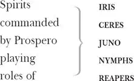

PROSPERO , the right Duke of Milan
MIRANDA , his daughter
ALONSO , King of Naples
SEBASTIAN , his brother
ANTONIO , Prospero's brother, the usurping Duke of Milan
FERDINAND , son to the King of Naples
GONZALO , an honest old councillor
ADRIAN and FRANCISCO , lords
TRINCULO , a jester
STEPHANO , a drunken butler
MASTER of a ship
BOATSWAIN
MARINERS
CALIBAN , a savage and deformed slave
ARIEL , an airy spirit

The Scene: an uninhabited island
A tempestuous noise of thunder and lightning heard. Enter a Shipmaster and a Boatswain 2
MASTER Boatswain!
BOATSWAIN Here, master. What cheer 3 ?
MASTER Good 4 : speak to th'mariners. Fall to't yarely 5 , or we run ourselves aground! Bestir 6 , bestir!
Exit
Enter Mariners
BOATSWAIN Heigh, my hearts 7 ! Cheerly 8 , cheerly, my hearts! Yare, yare 9 ! Take in the topsail 10 . Tend 11 to th'master's whistle.— Blow, till thou burst thy wind, if room enough 12 .
To the storm
Enter Alonso, Sebastian, Antonio, Ferdinand, Gonzalo and others
ALONSO Good boatswain, have 13 care. Where's the master? Play the 14 men.
BOATSWAIN I pray now, keep below.
ANTONIO Where is the master, boatswain?
BOATSWAIN Do you not hear him? You mar 15 our labour. Keep your cabins! You do assist the storm.
GONZALO Nay, good, be patient.
BOATSWAIN When the sea is. Hence 16 ! What cares these roarers 17 for the name of king? To cabin! Silence! Trouble us not.
GONZALO Good, yet remember whom thou hast aboard.
BOATSWAIN None that I more love than myself. You are a counsellor 18 : if you can command these elements to silence, and work the peace of the present 19 , we will not hand 20 a rope more: use your authority. If you cannot, give thanks you have lived so long, and make yourself ready in your cabin for the mischance of the hour, if it so hap 21 .— Cheerly, good hearts!—
To the Mariners
Out of our way, I say.
To the Courtiers
Exeunt [Boatswain with Mariners, followed by Alonso, Sebastian, Antonio and Ferdinand ]
GONZALO I have great comfort from this fellow: methinks he hath no drowning mark 22 upon him: his complexion is perfect gallows 23 . Stand fast, good Fate, to his hanging: make the rope of his destiny 24 our cable 25 , for our own doth little advantage. If he be not born to be hanged, our case is miserable.
Exit
Enter Boatswain
BOATSWAIN Down with the topmast 26 ! Yare! Lower, lower! Bring her to try with main course 27 . (A cry within ) A plague upon this howling! They are louder than the weather or our office 28 .
Enter Sebastian, Antonio and Gonzalo
Yet again? What do you here? Shall we give o'er 29 and drown? Have you a mind to sink?
SEBASTIAN A pox 30 cur 31 o'your throat, you bawling, blasphemous, incharitable dog!
BOATSWAIN Work you then.
ANTONIO Hang, cur! Hang, you whoreson, insolent noisemaker! We are less afraid to be drowned than thou art.
GONZALO I'll warrant him for drowning 32 , though the ship were no stronger than a nutshell and as leaky as an unstanched 33 wench.
BOATSWAIN Lay her ahold 34 , ahold! Set her two courses off to 35 sea again! Lay her off!
Enter Mariners, wet
MARINERS All lost! To prayers, to prayers! All lost!
BOATSWAIN What, must our mouths be cold 36 ?
GONZALO The king and prince at prayers: let's assist them, for our case is as theirs.
SEBASTIAN I'm out of patience.
ANTONIO We are merely 37 cheated of our lives by drunkards. This wide-chopped 38 rascal: would thou mightst lie drowning, the washing of ten tides 39 !
GONZALO He'll be hanged yet 40 ,
Though every drop of water swear against it
And gape at wid'st 41 to glut 42 him.
[Exeunt Boatswain and Mariners ]
A confused noise within
[VOICES OFF -STAGE ] Mercy on us! — We split 43 , we split! — Farewell, my wife and children! — Farewell, brother! — We split, we split, we split!
ANTONIO Let's all sink wi'th'king.
SEBASTIAN Let's take leave of him.
Exeunt [Antonio and Sebastian ]
GONZALO Now would I give a thousand furlong 44 s of sea for an acre 45 of barren ground: long heath 46 , brown furze 47 , anything. The wills above be done! But I would fain 48 die a dry death.
Exit
Enter Prospero 50 and Miranda 51
MIRANDA If by your art 52 , my dearest father, you have
Put the wild waters in this roar, allay 53 them.
The sky, it seems, would pour down stinking pitch 54 ,
But that the sea, mounting to th'welkin's 55 cheek,
Dashes the fire 56 out. O, I have suffered
With those that I saw suffer: a brave 57 vessel —
Who had, no doubt, some noble creature in her —
Dashed all to pieces. O, the cry did knock
Against my very heart. Poor souls, they perished.
Had I been any god of power, I would
Have sunk the sea within the earth, or ere 58
It should the good ship so have swallowed, and
The fraughting souls 59 within her.
PROSPERO Be collected 60 :
No more amazement 61 . Tell your piteous heart
There's no harm done.
MIRANDA O, woe the day!
PROSPERO No harm:
I have done nothing but in care of thee —
Of thee, my dear one, thee, my daughter — who
Art ignorant of what thou art: nought knowing
Of whence I am 62 , nor that I am more better 63
Than Prospero, master of a full poor cell 64 ,
And thy no greater father 65 .
MIRANDA More to know 66
Did never meddle with 67 my thoughts.
PROSPERO 'Tis time
I should inform thee further. Lend thy hand
And pluck my magic garment from me. So:
Lays down his magic cloak
Lie there, my art. Wipe thou thine eyes, have comfort.
The direful spectacle of the wreck, which touched
The very virtue of compassion in thee,
I have with such provision 68 in mine art
So safely ordered that there is no soul —
No, not so much perdition 69 as an hair
Betid 70 to any creature in the vessel
Which thou heard'st cry, which thou saw'st sink. Sit down,
Miranda sits
For thou must now know further.
MIRANDA You have often
Begun to tell me what I am, but stopped
And left me to a bootless inquisition 71 ,
Concluding 'Stay: not yet.'
PROSPERO The hour's now come,
The very minute bids thee ope 72 thine ear:
Obey, and be attentive. Canst thou remember
A time before we came unto this cell?
I do not think thou canst, for then thou wast not
Out 73 three years old.
MIRANDA Certainly, sir, I can.
PROSPERO By what? By any other house or person?
Of any thing the image, tell me, that
Hath kept with thy remembrance 74 .
MIRANDA 'Tis far off,
And rather like a dream than an assurance 75
That my remembrance warrants 76 . Had I not
Four or five women once that tended 77 me?
PROSPERO Thou hadst; and more, Miranda. But how is it
That this lives in thy mind? What see'st thou else
In the dark backward 78 and abysm 79 of time?
If thou rememb'rest aught 80 ere thou cam'st here,
How thou cam'st here thou mayst.
MIRANDA But that I do not.
PROSPERO Twelve year since, Miranda, twelve year since,
Thy father was the Duke of Milan and
A prince of power.
MIRANDA Sir, are not you my father?
PROSPERO Thy mother was a piece 81 of virtue, and
She said thou wast my daughter; and thy father
Was Duke of Milan, and his only heir
And princess, no worse issued 82 .
MIRANDA O the heavens!
What foul play had we, that we came from thence?
Or blessèd 83 wast we did?
PROSPERO Both, both, my girl.
By foul play — as thou say'st — were we heaved thence,
But blessedly holp 84 hither.
MIRANDA O, my heart bleeds
To think o'th'teen 85 that I have turned you to 86 ,
Which is from 87 my remembrance. Please you, further.
PROSPERO My brother and thy uncle, called Antonio —
I pray thee, mark 88 me — that a brother should
Be so perfidious 89 — he whom next thyself
Of all the world I loved, and to him put
The manage 90 of my state, as at that time
Through all the signories 91 it was the first,
And Prospero the prime 92 duke, being so reputed
In dignity, and for the liberal arts 93
Without a parallel; those being all my study,
The government I cast upon my brother
And to my state 94 grew stranger 95 , being transported
And rapt 96 in secret studies. Thy false uncle —
Dost thou attend me?
MIRANDA Sir, most heedfully.
PROSPERO Being once perfected 97 how to grant suits 98 ,
How to deny them, who t'advance and who
To trash for over-topping 99 , new created
The creatures that were mine 100 , I say, or changed 'em 101 ,
Or else new formed 'em 102 ; having both the key 103
Of officer and office, set all hearts i'th'state
To what tune pleased his ear, that 104 now he was
The ivy which had hid my princely trunk 105
And sucked my verdure 106 out on't.— Thou attend'st not.
MIRANDA O good sir, I do.
PROSPERO I pray thee, mark me:
I, thus neglecting worldly ends 107 , all dedicated
To closeness 108 and the bettering of my mind
With that, which but 109 by being so retired 110 ,
O'er-prized all popular rate 111 , in my false brother
Awaked an evil nature, and my trust,
Like a good parent 112 , did beget of 113 him
A falsehood in its contrary 114 , as great
As my trust was, which had indeed no limit,
A confidence sans 115 bound. He being thus lorded 116 ,
Not only with what my revenue yielded,
But what my power might else exact 117 : like one
Who having into 118 truth, by telling of it 119 ,
Made such a sinner of his memory
To credit his own lie 120 , he did believe
He was indeed the duke, out o'th'substitution 121
And executing th'outward face 122 of royalty
With all prerogative: hence his ambition growing —
Dost thou hear?
MIRANDA Your tale, sir, would cure deafness.
PROSPERO To have no screen 123 between this part he played,
And him 124 he played it for, he needs will be
Absolute Milan 125 . Me — poor man — my library
Was dukedom large enough: of temporal royalties 126
He thinks me now incapable. Confederates 127 —
So dry 128 he was for sway 129 — wi'th'King of Naples
To give him annual tribute 130 , do him homage,
Subject his coronet to his crown 131 , and bend
The dukedom yet 132 unbowed — alas, poor Milan —
To most ignoble stooping.
MIRANDA O the heavens!
PROSPERO Mark his condition 133 and th'event 134 , then tell me
If this might be a brother 135 .
MIRANDA I should sin
To think but 136 nobly of my grandmother:
Good wombs have borne bad sons.
PROSPERO Now the condition.
This King of Naples, being an enemy
To me inveterate 137 , hearkens 138 my brother's suit,
Which was, that he 139 , in lieu o'th'premises
Of homage 140 , and I know not how much tribute 141 ,
Should presently extirpate 142 me and mine
Out of the dukedom, and confer fair Milan,
With all the honours, on my brother: whereon,
A treacherous army levied, one midnight
Fated to th'purpose, did Antonio open
The gates of Milan, and i'th'dead of darkness
The ministers 143 for th'purpose hurried thence 144
Me and thy crying self.
MIRANDA Alack, for pity!
I, not rememb'ring how I cried out then,
Will cry it o'er again: it is a hint 145
That wrings mine eyes to't.
PROSPERO Hear a little further,
And then I'll bring thee to the present business
Which now's upon's: without the which, this story
Were most impertinent 146 .
MIRANDA Wherefore did they not
That hour destroy us?
PROSPERO Well demanded, wench:
My tale provokes that question. Dear, they durst 147 not,
So dear the love my people bore me: nor set
A mark so bloody on the business: but
With colours fairer, painted 148 their foul ends.
In few 149 , they hurried us aboard a barque 150 ,
Bore us some leagues to sea, where they prepared
A rotten carcass of a butt 151 , not rigged,
Nor tackle, sail, nor mast: the very rats
Instinctively have quit it. There they hoist 152 us,
To cry to th'sea that roared to us; to sigh
To th'winds, whose pity sighing back again,
Did us but loving wrong 153 .
MIRANDA Alack, what trouble
Was I then to you!
PROSPERO O, a cherubin 154
Thou wast that did preserve me. Thou didst smile,
Infusèd with a fortitude from heaven,
When I have decked 155 the sea with drops full salt 156 ,
Under my burden groaned, which 157 raised in me
An undergoing stomach 158 , to bear up
Against what should ensue.
MIRANDA How came we ashore?
Prospero sits
PROSPERO By providence divine.
Some food we had, and some fresh water, that
A noble Neapolitan, Gonzalo,
Out of his charity — who being then appointed
Master of this design 159 — did give us, with
Rich garments, linens, stuffs 160 and necessaries,
Which since have steaded much 161 . So, of his gentleness 162 ,
Knowing I loved my books, he furnished me
From mine own library with volumes that
I prize above my dukedom.
MIRANDA Would 163 I might
But ever see that man.
PROSPERO Now I arise:
Prospero stands
Sit still 164 , and hear the last of our sea-sorrow.
Here in this island we arrived, and here
Have I, thy schoolmaster, made thee more profit 165
Than other princes can that have more time
For vainer 166 hours, and tutors not so careful 167 .
MIRANDA Heavens thank you for't. And now, I pray you, sir,
For still 'tis beating in my mind: your reason
For raising this sea-storm?
PROSPERO Know thus far forth:
By accident most strange, bountiful Fortune —
Now my dear lady 168 — hath mine enemies
Brought to this shore: and by my prescience 169
I find my zenith 170 doth depend upon
A most auspicious star, whose influence 171
If now I court not, but omit 172 , my fortunes
Will ever after droop. Here cease more questions:
Thou art inclined to sleep. 'Tis a good dullness 173 ,
And give it way 174 : I know thou canst not choose.—
Miranda sleeps
Come away, servant, come. I am ready now.
Approach, my Ariel 175 , come.
Enter Ariel
ARIEL All hail, great master! Grave 176 sir, hail! I come
To answer thy best pleasure; be't to fly,
To swim, to dive into the fire, to ride
On the curled clouds: to thy strong bidding task 177
Ariel and all his quality 178 .
PROSPERO Hast thou, spirit,
Performed to point 179 the tempest that I bade thee?
ARIEL To every article.
I boarded the king's ship: now on the beak 180 ,
Now in the waist 181 , the deck, in every cabin,
I flamed amazement 182 : sometime I'd divide
And burn in many places; on the topmast,
The yards 183 and bowsprit 184 would I flame distinctly,
Then meet and join. Jove's lightning, the precursors
O'th'dreadful thunderclaps 185 , more momentary
And sight-outrunning 186 were not; the fire and cracks
Of sulphurous roaring, the most mighty Neptune 187
Seem to besiege and make his bold waves tremble,
Yea, his dread trident 188 shake.
PROSPERO My brave spirit!
Who was so firm, so constant, that this coil 189
Would not infect his reason?
ARIEL Not a soul
But felt a fever of the mad 190 and played
Some tricks of desperation 191 . All but mariners
Plunged in the foaming brine and quit the vessel,
Then all afire 192 with me: the king's son, Ferdinand,
With hair up-staring 193 — then like reeds, not hair —
Was the first man that leaped; cried 'Hell is empty
And all the devils are here.'
PROSPERO Why, that's my spirit!
But was not this nigh 194 shore?
ARIEL Close by, my master.
PROSPERO But are they, Ariel, safe?
ARIEL Not a hair perished:
On their sustaining 195 garments not a blemish,
But fresher than before: and, as thou bad'st me,
In troops 196 I have dispersed them 'bout the isle.
The king's son have I landed by himself,
Whom I left cooling of 197 the air with sighs
In an odd angle 198 of the isle, and sitting,
His arms in this sad knot 199 .
Folds his arms
PROSPERO Of the king's ship,
The mariners, say how thou hast disposed,
And all the rest o'th'fleet?
ARIEL Safely in harbour
Is the king's ship: in the deep nook where once
Thou call'dst me up at midnight to fetch dew 200
From the still-vexed Bermudas 201 , there she's hid;
The mariners all under hatches 202 stowed,
Who, with a charm 203 joined to their suffered labour 204 ,
I have left asleep: and for the rest o'th'fleet —
Which I dispersed — they all have met again,
And are upon the Mediterranean float 205
Bound sadly home for Naples,
Supposing that they saw the king's ship wrecked
And his great person perish.
PROSPERO Ariel, thy charge
Exactly is performed; but there's more work:
What is the time o'th'day?
ARIEL Past the mid season 206 .
PROSPERO At least two glasses 207 . The time 'twixt six and now
Must by us both be spent most preciously 208 .
ARIEL Is there more toil? Since thou dost give me pains 209 ,
Let me remember 210 thee what thou hast promised,
Which is not yet performed me.
PROSPERO How now? Moody 211 ?
What is't thou canst demand?
ARIEL My liberty.
PROSPERO Before the time be out 212 ? No more!
ARIEL I prithee,
Remember I have done thee worthy service,
Told thee no lies, made thee no mistakings, served
Without or 213 grudge or grumblings: thou did promise
To bate me 214 a full year.
PROSPERO Dost thou forget
From what a torment I did free thee?
ARIEL No.
PROSPERO Thou dost: and think'st it much to tread the ooze
Of the salt deep 215 ,
To run upon the sharp wind of the north,
To do me business in the veins o'th'earth
When it is baked with frost.
ARIEL I do not, sir.
PROSPERO Thou liest, malignant thing. Hast thou forgot
The foul witch Sycorax 216 , who with age and envy
Was grown into a hoop 217 ? Hast thou forgot her?
ARIEL No, sir.
PROSPERO Thou hast. Where was she born? Speak: tell me.
ARIEL Sir, in Algiers 218 .
PROSPERO O, was she so? I must
Once in a month recount what thou hast been,
Which thou forget'st. This damned witch Sycorax,
For mischiefs manifold, and sorceries terrible
To enter human hearing, from Algiers,
Thou know'st, was banished: for one thing she did
They would not take her life 219 . Is not this true?
ARIEL Ay, sir.
PROSPERO This blue-eyed 220 hag 221 was hither brought with child 222 ,
And here was left by th'sailors. Thou, my slave,
As thou report'st thyself, was then her servant:
And, for 223 thou wast a spirit too delicate 224
To act her earthy 225 and abhorred commands,
Refusing her grand hests 226 , she did confine thee
By help of her more potent ministers 227 ,
And in her most unmitigable 228 rage,
Into a cloven 229 pine, within which rift
Imprisoned thou didst painfully remain
A dozen years: within which space she died,
And left thee there, where thou didst vent thy groans
As fast as mill-wheels strike 230 . Then was this island —
Save for the son that she did litter 231 here,
A freckled whelp 232 , hag-born 233 — not honoured with
A human shape.
ARIEL Yes: Caliban 234 her son.
PROSPERO Dull thing 235 , I say so: he, that Caliban
Whom now I keep in service 236 . Thou best know'st
What torment I did find thee in: thy groans
Did make wolves howl and penetrate the breasts
Of ever-angry bears 237 ; it was a torment
To lay upon the damned, which Sycorax
Could not again undo. It was mine art,
When I arrived and heard thee, that made gape 238
The pine and let thee out.
ARIEL I thank thee, master.
PROSPERO If thou more murmur'st 239 , I will rend 240 an oak
And peg 241 thee in his knotty entrails 242 till
Thou hast howled away twelve winters.
ARIEL Pardon, master:
I will be correspondent 243 to command
And do my spriting 244 gently 245 .
PROSPERO Do so: and after two days
I will discharge 246 thee.
ARIEL That's my noble master!
What shall I do? Say what? What shall I do?
PROSPERO Go make thyself like a nymph o'th'sea,
Be subject to no sight but thine and mine: invisible
To every eyeball else. Go take this shape
And hither come in't: go! Hence with diligence!
Exit [Ariel ]
Awake, dear heart, awake. Thou hast slept well. Awake.
To Miranda
MIRANDA The strangeness of your story put
Heaviness 247 in me.
PROSPERO Shake it off. Come on:
We'll visit Caliban, my slave, who never
Yields us kind answer.
MIRANDA 'Tis a villain 248 , sir, I do not love to look on.
PROSPERO But, as 'tis,
We cannot miss 249 him: he does make our fire,
Fetch in our wood and serves in offices 250
That profit us. What, ho! Slave! Caliban!
Thou earth 251 , thou! Speak!
CALIBAN There's wood enough within.
Within
PROSPERO Come forth, I say! There's other business for thee:
Come, thou tortoise! When?
Enter Ariel like a water-nymph
Fine apparition: my quaint 252 Ariel,
Hark in thine ear.
ARIEL My lord, it shall be done.
Exit
PROSPERO Thou poisonous slave, got 253 by the devil himself
Upon thy wicked dam 254 : come forth!
Enter Caliban
CALIBAN As wicked dew as e'er my mother brushed
With raven's feather from unwholesome fen 255
Drop on you both! A southwest 256 blow on ye
And blister you all o'er!
PROSPERO For this, be sure, tonight thou shalt have cramps,
Side-stitches that shall pen thy breath up: urchins 257
Shall, for that vast 258 of night that they may work,
All exercise 259 on thee: thou shalt be pinched
As thick as honeycomb 260 , each pinch more stinging
Than 261 bees that made 'em 262 .
CALIBAN I must eat my dinner.
This island's mine by Sycorax my mother,
Which thou tak'st from me. When thou cam'st first,
Thou strok'st me and made much of me: wouldst give me
Water with berries 263 in't, and teach me how
To name the bigger light, and how the less 264 ,
That burn by day and night: and then I loved thee
And showed thee all the qualities o'th'isle,
The fresh springs, brine-pits 265 , barren place and fertile.
Cursed be I that did so! All the charms 266
Of Sycorax — toads, beetles, bats — light 267 on you!
For I am all the subjects that you have,
Which first was mine own king: and here you sty 268 me
In this hard rock 269 , whiles you do keep from me
The rest o'th'island.
PROSPERO Thou most lying slave,
Whom stripes 270 may move, not kindness 271 ! I have used 272 thee —
Filth as thou art — with humane 273 care, and lodged thee
In mine own cell, till thou didst seek to violate
The honour of my child 274 .
CALIBAN O ho, O ho! Would't had been done!
Thou didst prevent me: I had peopled else 275
This isle with Calibans.
MIRANDA Abhorrèd slave,
Which any print 276 of goodness wilt not take,
Being capable of all ill 277 . I pitied thee,
Took pains to make thee speak, taught thee each hour
One thing or other: when thou didst not, savage,
Know thine own meaning, but wouldst gabble like
A thing most brutish, I endowed thy purposes
With words that made them known. But thy vile race 278 —
Though thou didst learn — had that in't which good natures
Could not abide to be with: therefore wast thou
Deservedly confined into this rock, who hadst
Deserved more 279 than a prison.
CALIBAN You taught me language, and my profit on't
Is, I know how to curse. The red-plague 280 rid 281 you
For learning 282 me your language.
PROSPERO Hag-seed 283 , hence!
Fetch us in fuel, and be quick: thou'rt best 284
To answer other business. Shrug'st thou, malice?
If thou neglect'st or dost unwillingly
What I command, I'll rack 285 thee with old cramps 286 ,
Fill all thy bones with aches, make thee roar,
That beasts shall tremble at thy din.
CALIBAN No, pray thee.—
I must obey: his art is of such power,
Aside
It would control my dam's god, Setebos 287 ,
And make a vassal 288 of him.
PROSPERO So, slave, hence!
Exit Caliban
Enter Ferdinand, and Ariel, invisible, playing and singing
ARIEL Come unto these yellow sands,
Song
And then take hands:
Curtsied when you have, and kissed
The wild waves whist 289 :
Foot it featly 290 here and there,
And, sweet sprites, bear
The burden 291 .
[SPIRITS Within, sing the ] (burden, dispersedly )
Hark, hark! Bow-wow!
The watch-dogs bark: bow-wow.
ARIEL Hark, hark! I hear
The strain 292 of strutting chanticleer 293
Cry, cock-a-diddle-dow.
FERDINAND Where should this music be? I'th'air or th'earth?
It sounds no more: and sure it waits upon 294
Some god o'th'island. Sitting on a bank,
Weeping again the 295 king my father's wreck,
This music crept by me upon the waters,
Allaying both their fury and my passion 296
With its sweet air: thence I have followed it —
Or it hath drawn me rather — but 'tis gone.
No, it begins again.
ARIEL Full fathom five 297 thy father lies,
Song
Of his bones are coral made:
Those are pearls that were his eyes:
Nothing of him that doth fade 298 ,
But doth suffer 299 a sea-change
Into something rich and strange.
Sea-nymphs hourly ring his knell 300 :
[SPIRITS Within, sing the ] (burden ) Ding-dong.
ARIEL Hark! Now I hear them: ding-dong, bell.
FERDINAND The ditty 301 does remember 302 my drowned father.
This is no mortal 303 business, nor no sound
That the earth owes 304 . I hear it now above me.
PROSPERO The fringèd curtains 305 of thine eye advance 306
And say what thou see'st yond 307 .
MIRANDA What is't? A spirit?
Lord, how it looks about! Believe me, sir,
It carries a brave 308 form. But 'tis a spirit.
PROSPERO No, wench: it eats, and sleeps, and hath such senses
As we have, such. This gallant 309 which thou see'st
Was in the wreck: and, but 310 he's something 311 stained
With grief — that's beauty's canker 312 — thou mightst call him
A goodly 313 person: he hath lost his fellows
And strays about to find 'em.
MIRANDA I might call him
A thing divine, for nothing natural 314
I ever saw so noble.
PROSPERO It goes on, I see,
Aside
As my soul prompts 315 it.— Spirit, fine spirit: I'll free thee
To Ariel
Within two days for this.
FERDINAND Most sure, the goddess
On whom these airs 316 attend! Vouchsafe 317 my prayer
May know if you remain 318 upon this island,
And that you will some good instruction give
How I may bear me 319 here: my prime request,
Which I do last pronounce, is — O you wonder 320 ! —
If you be maid 321 or no?
MIRANDA No wonder, sir,
But certainly a maid.
FERDINAND My language? Heavens!
I am the best 322 of them that speak this speech,
Were I but where 323 'tis spoken.
PROSPERO How? The best?
What wert thou if the King of Naples heard thee?
FERDINAND A single thing 324 , as I am now, that wonders
To hear thee speak of Naples. He 325 does hear me:
And that he does, I weep. Myself am Naples,
Who with mine eyes, never since at ebb 326 , beheld
The king my father wrecked.
MIRANDA Alack, for mercy!
FERDINAND Yes, faith, and all his lords, the Duke of Milan
And his brave son 327 being twain 328 .
PROSPERO The Duke of Milan
Aside
And his more braver daughter could control 329 thee
If now 'twere fit to do't. At the first sight
They have changed eyes 330 .— Delicate 331 Ariel,
To Ariel
I'll set thee free for this.— A word, good sir,
To Ferdinand
I fear you have done yourself some wrong 332 : a word.
MIRANDA Why speaks my father so ungently 333 ? This
Is the third man that e'er I saw: the first
That e'er I sighed for. Pity move my father
To be inclined my way.
FERDINAND O, if a virgin,
And your affection not gone forth 334 , I'll make you
The Queen of Naples.
PROSPERO Soft 335 , sir, one word more.—
They are both in either's 336 powers: but this swift business
Aside
I must uneasy 337 make, lest too light 338 winning
Make the prize light.— One word more: I charge 339 thee
To Ferdinand
That thou attend 340 me: thou dost here usurp
The name thou ow'st not 341 , and hast put thyself
Upon this island as a spy, to win it
From me, the lord on't 342 .
FERDINAND No, as I am a man.
MIRANDA There's nothing ill can dwell in such a temple 343 :
If the ill-spirit have so fair a house,
Good things will strive to dwell with't.
PROSPERO Follow me.—
To Ferdinand
Speak not you for him: he's a traitor.— Come:
To Miranda/To Ferdinand
I'll manacle thy neck and feet together:
Seawater shalt thou drink: thy food shall be
The fresh-brook mussels 344 , withered roots and husks
Wherein the acorn cradled. Follow.
FERDINAND No!
I will resist such entertainment 345 till
Mine enemy has more power.
He draws, and is charmed from moving
MIRANDA O dear father,
Make not too rash a trial of him, for
He's gentle 346 , and not fearful 347 .
PROSPERO What, I say,
My foot 348 my tutor?— Put thy sword up, traitor:
To Ferdinand
Who mak'st a show but dar'st not strike, thy conscience
Is so possessed with guilt. Come from thy ward 349 ,
For I can here disarm thee with this stick,
Brandishes his staff
And make thy weapon drop.
MIRANDA Beseech you, father.
Kneels or attempts to stop him
PROSPERO Hence! Hang not on my garments.
MIRANDA Sir, have pity:
I'll be his surety 350 .
PROSPERO Silence! One word more
Shall make me chide 351 thee, if not hate thee. What,
An advocate for an impostor? Hush!
Thou think'st there is no more such shapes 352 as he,
Having seen but him and Caliban. Foolish wench,
To 353 th'most of men this is a Caliban,
And they to him are angels.
MIRANDA My affections
Are then most humble: I have no ambition
To see a goodlier man.
PROSPERO Come on, obey:
To Ferdinand
Thy nerves 354 are in their infancy again
And have no vigour 355 in them.
FERDINAND So they are:
My spirits 356 , as in a dream, are all bound up.
My father's loss, the weakness which I feel,
The wreck of all my friends, nor this man's threats,
To whom I am subdued, are but light to me,
Might I but through 357 my prison once a day
Behold this maid: all corners else 358 o'th'earth
Let liberty make use of: space enough
Have I in such a prison.
PROSPERO It works.— Come on.—
Aside/To Ferdinand
Thou hast done well, fine Ariel!— Follow me.—
To Ariel/To Ferdinand
Hark what thou else shalt do me 359 .
To Ariel
MIRANDA Be of comfort:
My father's of a better nature, sir,
Than he appears by speech: this is unwonted 360
Which now came from him.
PROSPERO Thou shalt be as free
To Ariel
As mountain winds; but then 361 exactly do
All points of my command.
ARIEL To th'syllable.
PROSPERO Come, follow.— Speak not for him.
To Ferdinand/To Miranda
Exeunt
Enter Alonso, Sebastian, Antonio, Gonzalo, Adrian, Francisco and others
GONZALO Beseech you, sir, be merry; you have cause —
To Alonso
So have we all — of joy, for our escape
Is much beyond 362 our loss. Our hint 363 of woe
Is common: every day some sailor's wife,
The masters of some merchant 364 , and the merchant
Have just our theme of woe. But for the miracle —
I mean our preservation — few in millions
Can speak like us: then wisely, good sir, weigh 365
Our sorrow with our comfort.
ALONSO Prithee, peace 366 .
SEBASTIAN He receives comfort like cold porridge.
Antonio and Sebastian speak apart
ANTONIO The visitor 367 will not give him o'er so.
SEBASTIAN Look, he's winding up the watch of his wit 368 : by and by it will strike.
GONZALO Sir—
To Alonso
SEBASTIAN One: tell 369 .
GONZALO When every grief is entertained 370 that's offered, comes to th'entertainer—
SEBASTIAN A dollar 371 .
Aside to Antonio, but overheard by Gonzalo
GONZALO Dolour 372 comes to him, indeed: you have spoken truer than you purposed 373 .
SEBASTIAN You have taken it wiselier 374 than I meant you should.
GONZALO Therefore, my lord—
To Alonso
ANTONIO Fie, what a spendthrift is he of his tongue!
ALONSO I prithee, spare 375 .
To Gonzalo
GONZALO Well, I have done: but yet—
SEBASTIAN He will be talking.
ANTONIO Which, of he or Adrian, for a good wager, first begins to crow 376 ?
SEBASTIAN The old cock.
ANTONIO The cockerel 377 .
SEBASTIAN Done. The wager 378 ?
ANTONIO A laughter 379 .
SEBASTIAN A match!
ADRIAN Though this island seem to be desert 380 —
SEBASTIAN Ha, ha, ha!
ANTONIO So: you're paid 381 .
ADRIAN Uninhabitable and almost inaccessible—
SEBASTIAN Yet—
ADRIAN Yet—
ANTONIO He could not miss't.
ADRIAN It must needs be of subtle 382 , tender and delicate temperance 383 .
ANTONIO Temperance was a delicate 384 wench.
SEBASTIAN Ay, and a subtle 385 , as he most learnedly delivered 386 .
ADRIAN The air breathes upon us here most sweetly.
SEBASTIAN As if it had lungs, and rotten ones.
ANTONIO Or as 'twere perfumed by a fen 387 .
GONZALO Here is everything advantageous to life.
ANTONIO True: save 388 means to live.
SEBASTIAN Of that there's none, or little.
GONZALO How lush and lusty 389 the grass looks. How green!
ANTONIO The ground indeed is tawny 390 .
SEBASTIAN With an eye 391 of green in't.
ANTONIO He misses not much.
SEBASTIAN No: he doth but mistake the truth totally.
GONZALO But the rarity 392 of it is — which is indeed almost beyond credit 393 —
SEBASTIAN As many vouched 394 rarities are.
GONZALO —That our garments, being, as they were, drenched in the sea, hold notwithstanding their freshness and glosses, being rather new-dyed 395 than stained with salt water.
ANTONIO If but one of his pockets could speak, would it not say he lies?
SEBASTIAN Ay, or very falsely pocket up 396 his report.
GONZALO Methinks our garments are now as fresh as when we put them on first in Afric 397 , at the marriage of the king's fair daughter Claribel to the King of Tunis 398 .
SEBASTIAN 'Twas a sweet marriage, and we prosper well in our return.
ADRIAN Tunis was never graced before with such a paragon to their queen.
GONZALO Not since widow Dido's 399 time.
ANTONIO Widow! A pox o'that! How came that 'widow' in 400 ? Widow Dido!
SEBASTIAN What if he had said 'widower Aeneas' 401 too? Good lord, how you take it!
ADRIAN 'Widow Dido', said you? You make me study of 402 that: she was of Carthage 403 , not of Tunis.
GONZALO This Tunis, sir, was Carthage.
ADRIAN Carthage?
GONZALO I assure you, Carthage.
ANTONIO His word is more than the miraculous harp 404 .
SEBASTIAN He hath raised the wall and houses too.
ANTONIO What impossible matter will he make easy next?
SEBASTIAN I think he will carry this island home in his pocket and give it his son for an apple.
ANTONIO And, sowing the kernels 405 of it in the sea, bring forth more islands.
GONZALO Ay.
ANTONIO Why, in good time.
GONZALO Sir, we were talking that our garments seem now as fresh as when we were at Tunis at the marriage of your daughter, who is now queen.
To Alonso
ANTONIO And the rarest 406 that e'er came there.
SEBASTIAN Bate 407 , I beseech you, widow Dido.
ANTONIO O, widow Dido? Ay, widow Dido 408 .
GONZALO Is not, sir, my doublet 409 as fresh as the first day I wore it? I mean, in a sort 410 —
ANTONIO That sort 411 was well fished for.
GONZALO —When I wore it at your daughter's marriage.
ALONSO You cram these words into mine ears against
The stomach 412 of my sense 413 . Would I had never
Married my daughter there: for, coming thence,
My son is lost and — in my rate 414 — she too,
Who is so far from Italy removed
I ne'er again shall see her. O thou mine heir
Of Naples and of Milan, what strange fish
Hath made his meal on thee?
FRANCISCO Sir, he may live:
I saw him beat the surges 415 under him,
And ride upon their backs; he trod the water,
Whose enmity he flung aside, and breasted
The surge most swoll'n that met him: his bold head
'Bove the contentious waves he kept, and oared 416
Himself with his good arms in lusty 417 stroke
To th'shore, that o'er his wave-worn basis 418 bowed,
As 419 stooping to relieve him: I not doubt
He came alive to land.
ALONSO No, no, he's gone.
SEBASTIAN Sir, you may thank yourself for this great loss,
To Alonso
That would not bless our Europe with your daughter,
But rather loose 420 her to an African,
Where she, at least, is banished from your eye,
Who 421 hath cause to wet the grief 422 on't.
ALONSO Prithee, peace.
SEBASTIAN You were kneeled to and importuned 423 otherwise
By all of us: and the fair soul herself
Weighed between loathness 424 and obedience at
Which end o'th'beam should bow 425 . We have lost your son,
I fear, forever: Milan and Naples have
More widows in them of this business' making
Than we bring men to comfort them.
The fault's your own.
ALONSO So is the dear'st 426 o'th'loss.
GONZALO My lord Sebastian,
The truth you speak doth lack some gentleness,
And time 427 to speak it in: you rub the sore,
When you should bring the plaster.
SEBASTIAN Very well.
ANTONIO And most chirurgeonly 428 .
GONZALO It is foul weather in us all, good sir,
To Alonso
When you are cloudy.
SEBASTIAN Foul weather?
ANTONIO Very foul.
GONZALO Had I plantation 429 of this isle, my lord—
ANTONIO He'd sow't with nettle-seed.
SEBASTIAN Or docks, or mallows 430 .
GONZALO And were the king on't, what would I do?
SEBASTIAN Scape being drunk for want 431 of wine.
GONZALO I'th'commonwealth I would by contraries
Execute all things 432 : for no kind of traffic 433
Would I admit: no name of magistrate:
Letters 434 should not be known: riches, poverty,
And use of service 435 , none: contract, succession 436 ,
Bourn 437 , bound of land, tilth 438 , vineyard, none:
No use of metal, corn, or wine, or oil:
No occupation, all men idle, all:
And women too, but innocent and pure:
No sovereignty.
SEBASTIAN Yet he would be king on't.
ANTONIO The latter end of his commonwealth forgets the beginning.
GONZALO All things in common 439 nature should produce
Without sweat or endeavour: treason, felony,
Sword, pike 440 , knife, gun, or need of any engine 441 ,
Would I not have: but nature should bring forth,
Of it own kind, all foison 442 , all abundance,
To feed my innocent people.
SEBASTIAN No marrying 'mong his subjects?
ANTONIO None, man, all idle: whores and knaves.
GONZALO I would with such perfection govern, sir,
T'excel the golden age 443 .
SEBASTIAN 'Save his majesty!
ANTONIO Long live Gonzalo!
Bowing or doffing hats
GONZALO And — do you mark 444 me, sir?
ALONSO Prithee, no more: thou dost talk nothing to me.
GONZALO I do well believe your highness: and did it to minister occasion 445 to these gentlemen, who are of such sensible 446 and nimble 447 lungs that they always use 448 to laugh at nothing.
ANTONIO 'Twas you we laughed at.
GONZALO Who in this kind of merry fooling am nothing to you: so you may continue and laugh at nothing still.
ANTONIO What a blow was there given!
SEBASTIAN An it had not fallen flat-long 449 .
GONZALO You are gentlemen of brave metal 450 : you would lift the moon out of her sphere 451 , if she would continue in it five weeks 452 without changing.
Enter Ariel [invisible ] playing solemn music
SEBASTIAN We would so, and then go a-batfowling 453 .
ANTONIO Nay, good my lord, be not angry.
GONZALO No, I warrant 454 you: I will not adventure my discretion so weakly 455 . Will you laugh me asleep, for I am very heavy 456 ?
ANTONIO Go sleep, and hear us.
All sleep except Alonso, Sebastian and Antonio
ALONSO What, all so soon asleep? I wish mine eyes
Would, with themselves, shut up my thoughts.
I find they are inclined to do so.
SEBASTIAN Please you, sir,
Do not omit 457 the heavy offer of it 458 .
It seldom visits sorrow: when it doth, it is a comforter.
ANTONIO We two, my lord, will guard your person
While you take your rest, and watch your safety.
ALONSO Thank you. Wondrous heavy.
He sleeps
SEBASTIAN What a strange drowsiness possesses them!
[Exit Ariel ]
ANTONIO It is the quality o'th'climate.
SEBASTIAN Why
Doth it not then our eyelids sink? I find
Not myself disposed to sleep.
ANTONIO Nor I: my spirits are nimble.
They fell together all, as 459 by consent
They dropped, as by a thunder-stroke. What might,
Worthy Sebastian? O, what might? — No more.—
And yet, methinks I see it in thy face,
What thou shouldst be: th'occasion speaks 460 thee, and
My strong imagination sees a crown
Dropping upon thy head.
SEBASTIAN What? Art thou waking 461 ?
ANTONIO Do you not hear me speak?
SEBASTIAN I do, and surely
It is a sleepy language and thou speak'st
Out of thy sleep. What is it thou didst say?
This is a strange repose, to be asleep
With eyes wide open: standing, speaking, moving,
And yet so fast asleep.
ANTONIO Noble Sebastian,
Thou let'st thy fortune sleep — die, rather: wink'st 462
Whiles thou art waking.
SEBASTIAN Thou dost snore distinctly 463 :
There's meaning in thy snores.
ANTONIO I am more serious than my custom 464 : you
Must be so too, if heed 465 me: which to do
Trebles thee o'er 466 .
SEBASTIAN Well, I am standing water 467 .
ANTONIO I'll teach you how to flow.
SEBASTIAN Do so: to ebb
Hereditary sloth 468 instructs me.
ANTONIO O,
If you but knew how you the purpose cherish
Whiles thus you mock it 469 : how in stripping it
You more invest 470 it. Ebbing 471 men, indeed,
Most often, do so near the bottom run
By their own fear, or sloth.
SEBASTIAN Prithee, say on 472 :
The setting 473 of thine eye and cheek proclaim
A matter 474 from thee; and a birth, indeed,
Which throes thee much to yield 475 .
ANTONIO Thus, sir:
Although this lord 476 of weak remembrance 477 , this,
Who shall be of as little memory 478
When he is earthed 479 , hath here almost persuaded —
For he's a spirit of 480 persuasion, only
Professes 481 to persuade — the king his son's alive:
'Tis as impossible that he's undrowned
As he that sleeps here swims.
SEBASTIAN I have no hope
That he's undrowned.
ANTONIO O, out of that 'no hope'
What great hope have you! No hope that way is
Another way so high a hope 482 , that even
Ambition cannot pierce a wink beyond,
But doubt discovery there 483 . Will you grant with me
That Ferdinand is drowned?
SEBASTIAN He's gone.
ANTONIO Then, tell me: who's the next heir of Naples?
SEBASTIAN Claribel.
ANTONIO She that is Queen of Tunis: she that dwells
Ten leagues 484 beyond man's life 485 : she that from Naples
Can have no note 486 , unless the sun were post 487 —
The man i'th'moon's too slow — till new-born chins
Be rough and razorable: she that from whom 488
We all were sea-swallowed, though some cast 489 again —
And by that destiny — to perform an act
Whereof what's past is prologue 490 , what to come
In yours and my discharge 491 .
SEBASTIAN What stuff 492 is this? How say you?
'Tis true, my brother's daughter's Queen of Tunis:
So is she heir of Naples, 'twixt which regions
There is some space 493 .
ANTONIO A space whose every cubit 494
Seems to cry out, 'How shall that Claribel
Measure us back 495 to Naples? Keep 496 in Tunis,
And let Sebastian wake 497 .' Say this were death
That now hath seized them: why, they were no worse
Than now they are. There be that can rule Naples
As well as he 498 that sleeps: lords that can prate 499
As amply and unnecessarily
As this Gonzalo: I myself could make
A chough of as deep chat 500 . O, that you bore
The mind that I do 501 ! What a sleep were this
For your advancement! Do you understand me?
SEBASTIAN Methinks I do.
ANTONIO And how does your content 502
Tender 503 your own good fortune?
SEBASTIAN I remember
You did supplant 504 your brother Prospero.
ANTONIO True:
And look how well my garments 505 sit upon me,
Much feater 506 than before. My brother's servants
Were then my fellows 507 : now they are my men 508 .
SEBASTIAN But for your conscience.
ANTONIO Ay, sir: where lies that? If 'twere a kibe 509 ,
'Twould put me to 510 my slipper: but I feel not
This deity 511 in my bosom: twenty consciences
That stand 'twixt me and Milan, candied 512 be they,
And melt ere they molest! Here lies your brother,
No better than the earth he lies upon,
If he were that which now he's like — that's dead —
Whom I with this obedient steel — three inches of it —
Touching sword or dagger
Can lay to bed forever: whiles you, doing thus,
To the perpetual wink 513 for aye 514 might put
This ancient morsel 515 , this Sir Prudence, who
Should not 516 upbraid our course. For all the rest,
They'll take suggestion as a cat laps milk:
They'll tell the clock to any business that
We say befits the hour 517 .
SEBASTIAN Thy case, dear friend,
Shall be my precedent. As thou got'st Milan,
I'll come by Naples. Draw thy sword: one stroke
Shall free thee from the tribute 518 which thou payest,
And I the king shall love thee.
ANTONIO Draw together:
And when I rear 519 my hand, do you the like,
To fall it on Gonzalo.
SEBASTIAN O, but one word.
They talk apart
Enter Ariel [invisible ] with music and song
ARIEL My master through his art foresees the danger
To Gonzalo, who still sleeps
That you, his friend, are in, and sends me forth —
For else his project 520 dies — to keep them living.
While you here do snoring lie,
Sings in Gonzalo's ear
Open-eyed conspiracy
His time 521 doth take.
If of life you keep a care,
Shake off slumber, and beware:
Awake, awake!
ANTONIO Then let us both be sudden.
Antonio and Sebastian draw their swords
GONZALO Now, good angels preserve the king!
Waking
ALONSO Why, how now? Ho, awake! Why are you drawn?
The others wake
Wherefore this ghastly 522 looking?
GONZALO What's the matter?
SEBASTIAN Whiles we stood here securing your repose,
Even now, we heard a hollow burst of bellowing
Like bulls, or rather lions: did't not wake you?
It struck mine ear most terribly.
ALONSO I heard nothing.
ANTONIO O, 'twas a din to fright a monster's ear,
To make an earthquake! Sure it was the roar
Of a whole herd of lions.
ALONSO Heard you this, Gonzalo?
GONZALO Upon mine honour, sir, I heard a humming,
And that a strange one too, which did awake me:
I shaked you, sir, and cried: as mine eyes opened,
I saw their weapons drawn: there was a noise,
That's verily 523 . 'Tis best we stand upon our guard,
Or that we quit this place: let's draw our weapons.
ALONSO Lead off this ground, and let's make further search
For my poor son.
GONZALO Heavens keep him from these beasts!
For he is sure i'th'island.
ALONSO Lead away.
ARIEL Prospero, my lord, shall know what I have done.
So, king, go safely on to seek thy son.
Exeunt [separately ]
Enter Caliban with a burden of wood. A noise of thunder heard
CALIBAN All the infections that the sun sucks up
From bogs, fens, flats 524 , on Prosper fall, and make him
By inch-meal 525 a disease. His spirits hear me,
And yet I needs must curse. But they'll nor 526 pinch 527 ,
Fright me with urchin-shows 528 , pitch me i'th'mire,
Nor lead me like a firebrand 529 in the dark
Out of my way, unless he bid 'em: but
For every trifle are they set upon me,
Sometime like apes, that mow 530 and chatter at me,
And after bite me: then like hedgehogs, which
Lie tumbling in my barefoot way and mount
Their pricks at my footfall: sometime am I
All wound 531 with adders, who with cloven 532 tongues
Do hiss me into madness.
Enter Trinculo 533
Lo 534 , now, lo!
Here comes a spirit of his, and to torment me
For bringing wood in slowly. I'll fall flat:
Perchance he will not mind 535 me.
Lies down and covers himself with his cloak
TRINCULO Here's neither bush nor shrub to bear off 536 any weather at all, and another storm brewing: I hear it sing i'th'wind: yond same black cloud, yond huge one, looks like a foul bombard 537 that would shed his liquor. If it should thunder as it did before, I know not where to hide my head: yond same cloud cannot choose but fall by pailfuls. What have we here? A man or a fish? Dead or alive? A fish, he smells like a fish: a very ancient and fishlike smell: a kind of not-of-the-newest poor-John 538 . A strange fish! Were I in England now — as once I was — and had but this fish painted 539 , not a holiday fool there but would give a piece of silver: there would this monster make a man 540 : any strange beast there makes a man: when they will not give a doit 541 to relieve a lame beggar, they will lay out ten to see a dead Indian 542 . Legged 543 like a man and his fins like arms! Warm, o'my troth! I do now let loose 544 my opinion, hold it no longer: this is no fish, but an islander that hath lately suffered by a thunderbolt. Alas, the storm is come again! My best way is to creep under his gaberdine 545 : there is no other shelter hereabout. Misery acquaints a man with strange bedfellows: I will here shroud 546 till the dregs of the storm be past.
Sees Caliban
Thunder
Trinculo gets under
Caliban's cloak
Enter Stephano, singing
With a bottle in his hand
STEPHANO I shall no more to sea, to sea:
Here shall I die ashore—
This is a very scurvy 547 tune to sing at a man's funeral: well, here's my comfort.
Drinks
The master, the swabber 548 , the boatswain and I,
Sings
The gunner and his mate,
Loved Mall, Meg and Marian and Margery,
But none of us cared for Kate.
For she had a tongue with a tang 549 ,
Would cry to a sailor, 'Go hang!'
She loved not the savour 550 of tar nor of pitch,
Yet a tailor might scratch her where'er she did itch 551 :
Then to sea, boys, and let her go hang!
This is a scurvy tune too: but here's my comfort.
Drinks
CALIBAN Do not torment me: O!
STEPHANO What's the matter 552 ? Have we devils here? Do you put tricks upon's with savages and men of Ind 553 , ha? I have not scaped drowning to be afeard now of your four legs: for it hath been said, 'As proper 554 a man as ever went on four legs 555 , cannot make him give ground 556 ': and it shall be said so again, while Stephano breathes at'nostrils 557 .
CALIBAN The spirit torments me: O!
STEPHANO This is some monster of the isle with four legs, who hath got, as I take it, an ague 558 . Where the devil should he learn our language? I will give him some relief 559 , if it be but for that. If I can recover 560 him, and keep him tame, and get to Naples with him, he's a present for any emperor that ever trod on neat's leather 561 .
CALIBAN Do not torment me, prithee: I'll bring my wood home faster.
STEPHANO He's in his fit now, and does not talk after 562 the wisest. He shall taste of my bottle: if he have never drunk wine afore, it will go near to remove his fit. If I can recover him 563 and keep him tame, I will not take too much for him: he shall pay for him that hath him, and that soundly.
CALIBAN Thou dost me yet but little hurt: thou wilt anon 564 , I know it by thy trembling. Now Prosper works upon thee.
STEPHANO Come on your ways 565 : open your mouth: here is that which will give language to you, cat 566 . Open your mouth: this will shake 567 your shaking, I can tell you, and that soundly: you cannot tell who's your friend: open your chaps 568 again.
Gives Caliban
a drink
Caliban spits it out
TRINCULO I should know that voice: it should be— but he is drowned, and these are devils. O, defend me!
STEPHANO Four legs and two voices: a most delicate 569 monster! His forward voice now is to speak well of his friend: his backward voice is to utter foul speeches and to detract 570 . If all the wine in my bottle will recover him, I will help his ague. Come. Amen! I will pour some in thy other mouth.
TRINCULO Stephano!
STEPHANO Doth thy other mouth call me? Mercy, mercy! This is a devil, and no monster: I will leave him, I have no long spoon 571 .
TRINCULO Stephano! If thou be'st Stephano, touch me and speak to me, for I am Trinculo — be not afeard — thy good friend Trinculo.
STEPHANO If thou be'st Trinculo, come forth: I'll pull thee by the lesser legs 572 . If any be Trinculo's legs, these are they. Thou art very Trinculo indeed! How cam'st thou to be the siege 573 of this moon-calf 574 ? Can he vent 575 Trinculos?
Pulls him out
TRINCULO I took him to be killed with a thunder-stroke: but art thou not drowned, Stephano? I hope now thou art not drowned: is the storm overblown 576 ? I hid me under the dead moon-calf 's gaberdine for fear of the storm: and art thou living, Stephano? O Stephano, two Neapolitans scaped!
Trinculo and Stephano embrace or dance
STEPHANO Prithee, do not turn me about: my stomach is not constant.
CALIBAN These be fine things, an if 577 they be not sprites. That's a brave god and bears celestial liquor: I will kneel to him.
Aside
STEPHANO How didst thou scape? How cam'st thou hither? Swear by this bottle how thou cam'st hither. I escaped upon a butt of sack 578 which the sailors heaved o'erboard, by this bottle which I made of the bark of a tree with mine own hands since I was cast ashore.
CALIBAN I'll swear upon that bottle to be thy true subject, for the liquor is not earthly.
STEPHANO Here: swear then how thou escap'dst.
TRINCULO Swum ashore, man, like a duck: I can swim like a duck, I'll be sworn.
STEPHANO Here, kiss the book 579 . Though thou canst swim like a duck, thou art made like a goose 580 .
Gives Trinculo the bottle
TRINCULO O Stephano, hast any more of this?
STEPHANO The whole butt, man: my cellar is in a rock by th'sea-side, where my wine is hid.— How now, moon-calf? How does thine ague?
To Caliban
CALIBAN Hast thou not dropped from heaven?
STEPHANO Out o'th'moon, I do assure thee: I was the man i'th'moon when time was 581 .
CALIBAN I have seen thee in her, and I do adore 582 thee: my mistress 583 showed me thee, and thy dog, and thy bush 584 .
STEPHANO Come, swear to that: kiss the book: I will furnish it anon with new contents 585 . Swear.
Gives Caliban
the bottle
Caliban drinks
TRINCULO By this good light 586 , this is a very shallow 587 monster! I afeard of him? A very weak monster! The man i'th'moon? A most poor, credulous monster! Well drawn 588 , monster, in good sooth 589 !
Aside?
CALIBAN I'll show thee every fertile inch o'th'island: and I will kiss thy foot. I prithee, be my god.
TRINCULO By this light, a most perfidious 590 and drunken monster! When's god's asleep, he'll rob his bottle.
Aside?
CALIBAN I'll kiss thy foot: I'll swear myself thy subject.
STEPHANO Come on then: down, and swear.
Caliban kneels
TRINCULO I shall laugh myself to death at this puppy-headed 591 monster. A most scurvy monster! I could find in my heart to beat him—
Aside?
STEPHANO Come, kiss.
To Caliban
TRINCULO —But that the poor monster's in drink 592 : an abominable monster!
CALIBAN I'll show thee the best springs: I'll pluck thee berries: I'll fish for thee and get thee wood enough. A plague upon the tyrant that I serve! I'll bear him no more sticks, but follow thee, thou wondrous man.
TRINCULO A most ridiculous monster, to make a wonder of a poor drunkard!
Aside?
CALIBAN I prithee, let me bring thee where crabs 593 grow: and I with my long nails will dig thee pignuts 594 : show thee a jay's nest and instruct thee how to snare the nimble marmoset 595 : I'll bring thee to clust'ring filberts 596 , and sometimes I'll get thee young scamels 597 from the rock. Wilt thou go with me?
STEPHANO I prithee, now lead the way without any more talking. Trinculo, the king and all our company else being drowned, we will inherit here.— Here, bear my bottle. Fellow Trinculo, we'll fill him by and by again.
To Caliban
CALIBAN Farewell master: farewell, farewell!
Sings drunkenly
TRINCULO A howling monster: a drunken monster!
CALIBAN No more dams I'll make for 598 fish,
Sings
Nor fetch in firing 599 at requiring,
Nor scrape trencher 600 , nor wash dish,
'Ban, 'Ban, Cacaliban
Has a new master: get a new man.
Freedom, high-day 601 ! High-day, freedom! Freedom, high-day, freedom!
STEPHANO O brave monster, lead the way!
Exeunt
Enter Ferdinand, bearing a log
FERDINAND There be some sports 602 are painful 603 , and their labour
Sets down the log
Delight in them sets off 604 : some kinds of baseness 605
Are nobly undergone, and most poor matters
Point to rich ends. This my mean 606 task
Would be as heavy to me as odious, but
The mistress which I serve quickens 607 what's dead
And makes my labours pleasures: O, she is
Ten times more gentle than her father's crabbed 608 ;
And he's composed of harshness. I must remove
Some thousands of these logs and pile them up,
Upon a sore injunction 609 . My sweet mistress
Weeps when she sees me work and says such baseness
Had never like executor 610 . I forget 611 :
But these sweet thoughts do even refresh my labours,
Picks up the log
Most busy least 612 , when I do it.
Enter Miranda and Prospero
Prospero at a distance, unseen
MIRANDA Alas, now pray you,
To Ferdinand
Work not so hard. I would the lightning had
Burnt up those logs that you are enjoined 613 to pile.
Pray, set it down and rest you: when this burns
'Twill weep 614 for having wearied you. My father
Is hard at study: pray now, rest yourself,
He's safe for these three hours.
FERDINAND O most dear mistress,
The sun will set before I shall discharge 615
What I must strive to do.
MIRANDA If you'll sit down,
I'll bear your logs the while: pray give me that,
I'll carry it to the pile.
FERDINAND No, precious creature,
I had rather crack my sinews, break my back,
Than you should such dishonour undergo,
While I sit lazy by.
MIRANDA It would become 616 me
As well as it does you; and I should do it
With much more ease, for my good will is to it,
And yours it is against.
PROSPERO Poor worm, thou art infected 617 .
Aside
This visitation 618 shows it.
MIRANDA You look wearily.
FERDINAND No, noble mistress, 'tis fresh morning with me
When you are by 619 at night. I do beseech you,
Chiefly that I might set it in my prayers,
What is your name?
MIRANDA Miranda.— O my father,
I have broke your hest 620 to say so.
FERDINAND Admired Miranda,
Indeed the top 621 of admiration, worth
What's dearest to the world! Full many a lady
I have eyed with best regard, and many a time
Th'harmony of their tongues hath into bondage 622
Brought my too diligent 623 ear. For several virtues
Have I liked several women, never any
With so full soul but some defect in her
Did quarrel with the noblest grace she owed 624 ,
And put it to the foil 625 . But you, O you,
So perfect and so peerless, are created
Of every creature's best.
MIRANDA I do not know
One of my sex; no woman's face remember,
Save from my glass 626 , mine own: nor have I seen
More that I may call men than you, good friend 627 ,
And my dear father: how features are abroad 628 ,
I am skilless 629 of; but by my modesty 630 —
The jewel in my dower 631 — I would not wish
Any companion in the world but you:
Nor can imagination form a shape
Besides yourself to like of. But I prattle
Something too wildly, and my father's precepts 632
I therein do forget.
FERDINAND I am in my condition 633
A prince, Miranda: I do think, a king —
I would not so — and would no more endure
This wooden slavery than to suffer
The flesh-fly 634 blow 635 my mouth. Hear my soul speak:
The very instant that I saw you, did
My heart fly to your service, there resides
To make me slave to it, and for your sake
Am I this patient log-man.
MIRANDA Do you love me?
FERDINAND O heaven, O earth, bear witness to this sound,
And crown what I profess with kind event 636
If I speak true: if hollowly 637 , invert
What best is boded 638 me to mischief 639 : I,
Beyond all limit of what 640 else i'th'world,
Do love, prize, honour you.
MIRANDA I am a fool
To weep at what I am glad of.
PROSPERO Fair 641 encounter
Aside
Of two most rare 642 affections! Heavens rain grace
On that which breeds 643 between 'em.
FERDINAND Wherefore weep you?
MIRANDA At mine unworthiness, that dare not offer
What I desire to give; and much less take
What I shall die to want 644 . But this is trifling,
And all the more it seeks to hide itself
The bigger bulk it shows. Hence, bashful cunning 645 ,
And prompt me, plain and holy innocence.
I am your wife, if you will marry me:
If not, I'll die your maid 646 : to be your fellow 647
You may deny me, but I'll be your servant
Whether you will or no.
FERDINAND My mistress 648 , dearest,
Kneels
And I thus humble ever.
MIRANDA My husband, then?
FERDINAND Ay, with a heart as willing
As bondage e'er of freedom 649 : here's my hand.
MIRANDA And mine, with my heart in't: and now farewell
Till half an hour hence.
FERDINAND A thousand 650 thousand!
Exeunt [Ferdinand and Miranda, separately ]
PROSPERO So glad of this as they I cannot be,
Who are surprised 651 withal 652 : but my rejoicing
At nothing can be more 653 . I'll to my book,
For yet ere supper-time must I perform
Much business appertaining 654 .
Exit
Enter Caliban, Stephano and Trinculo
STEPHANO Tell not me 655 : when the butt is out 656 we will drink water: not a drop before; therefore bear up 657 , and board 'em 658 . Servant-monster, drink to me.
TRINCULO Servant-monster? The folly of this island!— They say there's but five upon this isle: we are three of them: if th'other two be brained 659 like us, the state totters.
Aside
STEPHANO Drink, servant-monster, when I bid thee: thy eyes are almost set 660 in thy head.
Caliban drinks
TRINCULO Where should they be set else? He were a brave monster indeed, if they were set in his tail 661 .
STEPHANO My man-monster hath drowned his tongue in sack: for my part, the sea cannot drown me: I swam, ere I could recover 662 the shore, five and thirty leagues 663 off and on 664 . By this light, thou shalt be my lieutenant, monster, or my standard 665 .
TRINCULO Your lieutenant, if you list 666 : he's no standard.
STEPHANO We'll not run 667 , Monsieur Monster.
TRINCULO Nor go 668 neither: but you'll lie 669 like dogs and yet say nothing neither.
STEPHANO Moon-calf, speak once in thy life, if thou be'st a good moon-calf.
CALIBAN How does thy honour? Let me lick thy shoe. I'll not serve him: he is not valiant 670 .
TRINCULO Thou liest, most ignorant monster: I am in case 671 to justle 672 a constable. Why, thou deboshed 673 fish thou, was there ever man a coward that hath drunk so much sack as I today? Wilt thou tell a monstrous 674 lie, being but half a fish and half a monster?
CALIBAN Lo, how he mocks me! Wilt thou let him, my lord?
TRINCULO 'Lord', quoth he! That a monster should be such a natural 675 !
CALIBAN Lo, lo, again! Bite him to death, I prithee.
STEPHANO Trinculo, keep a good tongue in your head: if you prove a mutineer, the next tree 676 . The poor monster's my subject and he shall not suffer indignity.
CALIBAN I thank my noble lord. Wilt thou be pleased to hearken once again to the suit I made to thee?
STEPHANO Marry 677 , will I: kneel and repeat it: I will stand 678 , and so shall Trinculo.
Enter Ariel, invisible
CALIBAN As I told thee before, I am subject to a tyrant, a sorcerer, that by his cunning 679 hath cheated me of the island.
ARIEL Thou liest.
CALIBAN Thou liest, thou jesting monkey, thou: I would my valiant master would destroy thee. I do not lie.
To Trinculo
STEPHANO Trinculo, if you trouble him any more in's tale 680 , by this hand, I will supplant 681 some of your teeth.
TRINCULO Why, I said nothing.
STEPHANO Mum 682 then, and no more.— Proceed.
To Trinculo/To Caliban
CALIBAN I say by sorcery he got this isle:
From me he got it. If thy greatness will
Revenge it on him — for I know thou dar'st,
But this thing 683 dare not —
STEPHANO That's most certain.
CALIBAN Thou shalt be lord of it, and I'll serve thee.
STEPHANO How now shall this be compassed 684 ?
Canst thou bring me to the party 685 ?
CALIBAN Yea, yea, my lord: I'll yield him thee 686 asleep,
Where thou mayst knock a nail into his head.
ARIEL Thou liest, thou canst not.
CALIBAN What a pied 687 ninny's this? Thou scurvy patch 688 —
To Trinculo
I do beseech thy greatness give him blows,
To Stephano
And take his bottle from him: when that's gone
He shall drink nought but brine, for I'll not show him
Where the quick freshes 689 are.
STEPHANO Trinculo, run into no further danger: interrupt the monster one word further, and by this hand, I'll turn my mercy out o'doors 690 and make a stockfish 691 of thee.
TRINCULO Why, what did I? I did nothing. I'll go further off.
STEPHANO Didst thou not say he lied?
ARIEL Thou liest.
STEPHANO Do I so? Take thou that. As you like this, give me the lie 692 another time.
Beats Trinculo
TRINCULO I did not give the lie. Out o'your wits and hearing too? A pox o'your bottle! This can sack and drinking do: a murrain 693 on your monster, and the devil take your fingers!
CALIBAN Ha, ha, ha!
STEPHANO Now, forward 694 with your tale.— Prithee, stand further off.
To Caliban/To Trinculo
CALIBAN Beat him enough 695 : after a little time,
I'll beat him too.
STEPHANO Stand further.— Come, proceed.
To Trinculo/To Caliban
CALIBAN Why, as I told thee, 'tis a custom with him
I'th'afternoon to sleep: there thou mayst brain 696 him,
Having first seized his books: or with a log
Batter his skull, or paunch 697 him with a stake,
Or cut his weasand 698 with thy knife. Remember
First to possess his books; for without them
He's but a sot 699 , as I am, nor hath not
One spirit to command: they all do hate him
As rootedly 700 as I. Burn but his books.
He has brave utensils 701 — for so he calls them —
Which when he has a house, he'll deck withal 702 .
And that most deeply to consider is
The beauty of his daughter: he himself
Calls her a nonpareil 703 : I never saw a woman,
But only Sycorax my dam, and she:
But she as far surpasseth Sycorax
As great'st does least.
STEPHANO Is it so brave a lass?
CALIBAN Ay, lord: she will become 704 thy bed, I warrant,
And bring thee forth brave brood 705 .
STEPHANO Monster, I will kill this man: his daughter and I will be king and queen—'save our graces 706 ! — and Trinculo and thyself shall be viceroys 707 . Dost thou like the plot, Trinculo?
TRINCULO Excellent.
STEPHANO Give me thy hand, I am sorry I beat thee: but, while thou livest, keep a good tongue in thy head.
CALIBAN Within this half hour will he be asleep:
Wilt thou destroy him then?
STEPHANO Ay, on mine honour.
ARIEL This will I tell my master.
Aside
CALIBAN Thou mak'st me merry: I am full of pleasure,
Let us be jocund 708 . Will you troll 709 the catch 710
You taught me but while-ere 711 ?
STEPHANO At thy request, monster, I will do reason 712 , any reason: come on, Trinculo, let us sing.
Flout 'em 713 and scout 'em
Sings
And scout 'em and flout 'em,
Thought is free.
CALIBAN That's not the tune.
Ariel plays the tune on a tabor 714 and pipe
STEPHANO What is this same?
TRINCULO This is the tune of our catch, played by the picture of Nobody 715 .
STEPHANO If thou be'st a man, show thyself in thy likeness: if thou be'st a devil, take't as thou list 716 .
TRINCULO O, forgive me my sins!
STEPHANO He that dies pays all debts: I defy thee. Mercy upon us!
CALIBAN Art thou afeard?
STEPHANO No, monster, not I.
CALIBAN Be not afeard, the isle is full of noises,
Sounds and sweet airs, that give delight and hurt not:
Sometimes a thousand twangling 717 instruments
Will hum about mine ears; and sometime voices,
That if I then had waked after long sleep,
Will make me sleep again, and then in dreaming,
The clouds methought would open and show riches
Ready to drop upon me, that when I waked
I cried to dream again.
STEPHANO This will prove a brave kingdom to me, where I shall have my music for nothing.
CALIBAN When Prospero is destroyed.
STEPHANO That shall be by and by 718 : I remember the story 719 .
[Exit Ariel, playing music ]
TRINCULO The sound is going away: let's follow it, and after do our work.
STEPHANO Lead, monster: we'll follow. I would I could see this taborer 720 : he lays it on 721 .
TRINCULO Wilt come? I'll follow Stephano.
To Caliban
Exeunt
Enter Alonso, Sebastian, Antonio, Gonzalo, Adrian, Francisco and others
GONZALO By'r lakin 722 , I can go no further, sir,
My old bones ache. Here's a maze 723 trod indeed
Through forth-rights and meanders 724 . By your patience,
I needs must rest me.
ALONSO Old lord, I cannot blame thee,
Who am myself attached 725 with weariness
To th'dulling of my spirits: sit down and rest.
Even here I will put off 726 my hope, and keep it
No longer for my flatterer 727 : he is drowned
Whom thus we stray to find, and the sea mocks
Our frustrate 728 search on land. Well, let him go.
ANTONIO I am right glad that he's so out of hope.
Aside to Sebastian
Do not for 729 one repulse 730 forgo 731 the purpose
That you resolved t'effect.
SEBASTIAN The next advantage will we take thoroughly.
Aside to Antonio
ANTONIO Let it be tonight:
Aside to Sebastian
For now they are oppressed 732 with travail 733 , they
Will not, nor cannot use such vigilance
As when they are fresh.
Solemn and strange music: and [enter ] Prospero on the top, invisible. Enter several strange shapes, bringing in a banquet, and dance about it with gentle actions of salutations, and inviting the king and others to eat, they depart
SEBASTIAN I say tonight: no more.
Aside to Antonio
ALONSO What harmony is this? My good friends, hark!
GONZALO Marvellous sweet music.
ALONSO Give us kind keepers 734 , heavens. What were these?
SEBASTIAN A living drollery 735 . Now I will believe
That there are unicorns: that in Arabia
There is one tree, the phoenix 736 ' throne, one phoenix
At this hour reigning there.
ANTONIO I'll believe both:
And what does else want credit 737 , come to me,
And I'll be sworn 'tis true: travellers ne'er did lie,
Though fools at home condemn 'em.
GONZALO If in Naples
I should report this now, would they believe me?
If I should say I saw such islanders —
For certes 738 these are people of the island —
Who though they are of monstrous 739 shape, yet note
Their manners are more gentle, kind, than of
Our human generation 740 you shall find
Many, nay almost any.
PROSPERO Honest lord,
Aside
Thou hast said well: for some of you there present
Are worse than devils.
ALONSO I cannot too much muse 741
Such shapes, such gesture, and such sound, expressing —
Although they want the use of tongue — a kind
Of excellent dumb discourse.
PROSPERO Praise in departing 742 .
Aside
FRANCISCO They vanished strangely 743 .
SEBASTIAN No matter, since
They have left their viands 744 behind: for we have stomachs 745 .
Will't please you taste of what is here?
ALONSO Not I.
GONZALO Faith, sir, you need not fear. When we were boys,
Who would believe that there were mountaineers 746 ,
Dewlapped 747 like bulls, whose throats had hanging at 'em
Wallets 748 of flesh? Or that there were such men
Whose heads stood in their breasts? Which now we find
Each putter-out of five for one 749 will bring us
Good warrant of.
ALONSO I will stand to 750 , and feed,
Although 751 my last: no matter, since I feel
The best is past. Brother, my lord the duke,
Stand to, and do as we.
Thunder and lightning. Enter Ariel, like a harpy 752 : claps his wings upon the table, and, with a quaint device 753 , the banquet vanishes
ARIEL You are three men of sin, whom Destiny,
That hath to instrument 754 this lower world 755
And what is in't, the never-surfeited 756 sea
Hath caused to belch up you; and on this island,
Where man doth not inhabit — you 'mongst men
Being most unfit to live — I have made you mad;
And even with suchlike valour 757 men hang and drown
Their proper selves 758 . You fools: I and my fellows
Alonso, Sebastian and Antonio draw their swords
Are ministers of Fate: the elements
Of whom your swords are tempered 759 may as well
Wound the loud winds, or with bemocked-at 760 stabs
Kill the still-closing waters 761 , as diminish
One dowl 762 that's in my plume 763 . My fellow ministers
Are like 764 invulnerable. If you could hurt,
Your swords are now too massy 765 for your strengths,
And will not be uplifted. But remember —
For that's my business 766 to you — that you three
From Milan did supplant good Prospero,
Exposed unto the sea — which hath requit 767 it —
Him and his innocent child: for which foul deed,
The powers, delaying — not forgetting — have
Incensed the seas and shores, yea, all the creatures
Against your peace. Thee of thy son, Alonso,
They have bereft: and do pronounce by me
Ling'ring perdition 768 — worse than any death
Can be at once — shall step by step attend
You and your ways: whose wraths to guard you from,
Which here in this most desolate isle else falls
Upon your heads, is nothing but heart's sorrow
And a clear life ensuing 769 .
He vanishes in thunder: then, to soft music, enter the shapes again, and dance, with mocks and mows 770 , and carrying out the table [depart ]
PROSPERO Bravely the figure of this harpy hast thou
Performed, my Ariel: a grace it had, devouring 771 :
Of my instruction hast thou nothing bated 772
In what thou hadst to say. So 773 , with good life 774
And observation strange 775 , my meaner 776 ministers
Their several kinds 777 have done. My high 778 charms work,
And these, mine enemies, are all knit up 779
In their distractions 780 : they now are in my power,
And in these fits 781 I leave them, while I visit
Young Ferdinand — whom they suppose is drowned —
And his and mine loved darling.
[Exit above ]
GONZALO I'th'name of something holy, sir, why stand you
In this strange stare?
ALONSO O, it is monstrous, monstrous:
Methought the billows 782 spoke and told me of it,
The winds did sing it to me, and the thunder —
That deep and dreadful organ-pipe — pronounced
The name of Prosper: it did bass 783 my trespass 784 .
Therefore my son i'th'ooze 785 is bedded: and
I'll seek him deeper than e'er plummet 786 sounded 787
And with him there lie mudded 788 .
Exit
SEBASTIAN But one fiend at a time,
I'll fight their legions o'er 789 .
ANTONIO I'll be thy second 790 .
Exeunt [Sebastian and Antonio ]
GONZALO All three of them are desperate: their great guilt,
Like poison given to work a great time after,
Now 'gins to bite the spirits 791 . I do beseech you —
That are of suppler joints — follow them swiftly
And hinder them from what this ecstasy 792
May now provoke them to.
ADRIAN Follow, I pray you.
Exeunt omnes
Enter Prospero, Ferdinand and Miranda
PROSPERO If I have too austerely 793 punished you,
To Ferdinand
Your compensation 794 makes amends, for I
Have given you here a third 795 of mine own life,
Or that for which I live: who once again
I tender 796 to thy hand. All thy vexations 797
Were but my trials of thy love, and thou
Hast strangely 798 stood the test: here, afore heaven,
I ratify 799 this my rich gift. O Ferdinand,
Do not smile at me that I boast her of 800 ,
For thou shalt 801 find she will outstrip all praise
And make it halt behind her.
FERDINAND I do believe it gainst 802 an oracle.
PROSPERO Then, as my guest, and thine own acquisition
Worthily purchased 803 , take my daughter: but
If thou dost break her virgin-knot before
All sanctimonious 804 ceremonies may
With full and holy rite be ministered,
No sweet aspersion 805 shall the heavens let fall
To make this contract grow; but barren hate,
Sour-eyed disdain and discord shall bestrew 806
The union of your bed, with weeds so loathly 807
That you shall hate it both. Therefore take heed,
As Hymen 808 's lamps shall light you.
FERDINAND As I hope
For quiet days, fair issue 809 and long life,
With such love as 'tis now, the murkiest den,
The most opportune place, the strong'st suggestion
Our worser genius can 810 , shall never melt
Mine honour into lust, to take away
The edge of that day's celebration
When I shall think or 811 Phoebus 812 ' steeds are foundered 813 ,
Or night kept chained below.
PROSPERO Fairly spoke.
Sit then and talk with her: she is thine own.
Ferdinand and Miranda sit and talk
What, Ariel! My industrious servant, Ariel!
Enter Ariel
ARIEL What would my potent master? Here I am.
PROSPERO Thou and thy meaner fellows your last service
Did worthily perform, and I must use you
In such another trick. Go bring the rabble 814 ,
O'er whom I give thee power, here to this place:
Incite them to quick motion, for I must
Bestow upon the eyes of this young couple
Some vanity 815 of mine art: it is my promise,
And they expect it from me.
ARIEL Presently 816 ?
PROSPERO Ay, with a twink 817 .
ARIEL Before you can say 'come' and 'go',
And breathe twice and cry 'so, so',
Each one, tripping on his toe,
Will be here with mop and mow 818 .
Do you love me, master? No?
PROSPERO Dearly, my delicate Ariel: do not approach
Till thou dost hear me call.
ARIEL Well: I conceive 819 .
Exit
PROSPERO Look thou be true 820 : do not give dalliance 821
To Ferdinand
Too much the rein: the strongest oaths are straw
To th'fire i'th'blood 822 : be more abstemious,
Or else goodnight 823 your vow.
FERDINAND I warrant you, sir,
The white cold virgin snow upon my heart
Abates the ardour of my liver 824 .
PROSPERO Well.
Now come, my Ariel! Bring a corollary 825 ,
Rather than want a spirit: appear, and pertly 826 .
No tongue! All eyes! Be silent.
Soft music. Enter Iris 827
IRIS Ceres 828 , most bounteous lady, thy rich leas 829
Of wheat, rye, barley, vetches 830 , oats and peas;
Thy turfy 831 mountains, where live nibbling sheep,
And flat meads 832 thatched with stover 833 , them to keep:
Thy banks with pionèd 834 and twillèd 835 brims 836 ,
Which spongy 837 April at thy hest 838 betrims 839
To make cold 840 nymphs chaste crowns 841 ; and thy broom-groves 842 ,
Whose shadow the dismissèd 843 bachelor loves,
Being lass-lorn 844 : thy poll-clipped 845 vineyard,
And thy sea-marge 846 sterile and rocky-hard,
Where thou thyself dost air 847 : the queen o'th'sky 848 ,
Whose wat'ry arch 849 and messenger am I,
Bids thee leave these 850 , and with her sovereign grace,
Juno descends
In her chariot
Here on this grass-plot, in this very place,
To come and sport 851 . Her peacocks 852 fly amain 853 :
Approach, rich Ceres, her to entertain.
Enter Ceres
CERES Hail, many-coloured messenger, that ne'er
Dost disobey the wife of Jupiter 854 :
Who, with thy saffron 855 wings, upon my flowers
Diffusest honey drops 856 , refreshing showers,
And with each end of thy blue bow 857 dost crown
My bosky 858 acres and my unshrubbed down 859 ,
Rich scarf to my proud 860 earth: why hath thy queen
Summoned me hither to this short-grassed green?
IRIS A contract of true love to celebrate,
And some donation 861 freely to estate 862
On the blest lovers.
CERES Tell me, heavenly bow,
If Venus or her son 863 , as thou dost know,
Do now attend the queen? Since they did plot
The means that 864 dusky Dis 865 my daughter got,
Her and her blind boy's 866 scandaled 867 company
I have forsworn 868 .
IRIS Of her society
Be not afraid: I met her deity
Cutting the clouds towards Paphos 869 , and her son
Dove-drawn 870 with her. Here thought they to have done
Some wanton 871 charm upon this man and maid,
Whose vows are that no bed-right 872 shall be paid
Till Hymen's torch be lighted 873 — but in vain.
Mars' hot minion 874 is returned again:
Her waspish-headed 875 son has broke his arrows,
Swears he will shoot no more, but play with sparrows 876 ,
And be a boy right out 877 .
CERES Highest queen of state,
Great Juno, comes: I know her by her gait 878 .
Juno alights
JUNO How does my bounteous 879 sister? Go with me
To bless this twain 880 , that they may prosperous be,
And honoured in their issue.
JUNO Honour, riches, marriage-blessing,
They sing
Long continuance, and increasing 881 ,
Hourly joys be still 882 upon you,
Juno sings her blessings on you.
CERES Earth's increase, foison 883 plenty,
Barns and garners 884 never empty,
Vines with clust'ring bunches growing,
Plants with goodly burden bowing:
Spring come to you at the farthest,
In the very end of harvest 885 .
Scarcity and want shall shun you,
Ceres' blessing so is on you.
FERDINAND This is a most majestic vision, and
Harmonious charmingly 886 . May I be bold 887
To think these spirits?
PROSPERO Spirits, which by mine art
I have from their confines called to enact
My present fancies 888 .
FERDINAND Let me live here ever:
So rare a wondered 889 father, and a wise,
Makes this place paradise.
PROSPERO Sweet, now, silence!
Juno and Ceres whisper seriously 890 :
There's something else to do. Hush, and be mute,
Or else our spell is marred.
Juno and Ceres whisper, and send Iris on employment
IRIS You nymphs, called Naiads 891 , of the windring 892 brooks,
With your sedged 893 crowns and ever-harmless looks,
Leave your crisp channels 894 , and on this green land
Answer your summons: Juno does command.
Come, temperate 895 nymphs, and help to celebrate
A contract of true love: be not too late 896 .
Enter certain nymphs
You sunburned sicklemen 897 of August weary,
Come hither from the furrow 898 and be merry:
Make holiday: your rye-straw hats put on,
And these fresh nymphs encounter every one
In country footing 899 .
Enter certain reapers, properly habited 900 : they join with the nymphs in a graceful dance, towards the end whereof Prospero starts suddenly and speaks: after which, to a strange, hollow, and confused noise, they heavily 901 vanish
PROSPERO I had forgot that foul conspiracy
Aside
Of the beast Caliban and his confederates
Against my life: the minute of their plot
Is almost come.— Well done. Avoid 902 : no more!
To the spirits
FERDINAND This is strange: your father's in some passion 903
To Miranda
That works him strongly.
MIRANDA Never till this day
Saw I him touched with anger, so distempered 904 .
PROSPERO You do look, my son, in a movèd sort 905 ,
As if you were dismayed: be cheerful, sir.
Our revels 906 now are ended. These our actors,
As I foretold you 907 , were all spirits and
Are melted into air, into thin air,
And, like the baseless 908 fabric 909 of this vision,
The cloud-capped towers, the gorgeous palaces,
The solemn temples, the great globe 910 itself,
Yea, all 911 which it 912 inherit, shall dissolve,
And, like this insubstantial pageant 913 faded,
Leave not a rack 914 behind. We are such stuff
As dreams are made on; and our little life
Is rounded 915 with a sleep. Sir, I am vexed,
Bear with my weakness, my old brain is troubled:
Be not disturbed with my infirmity.
If you be pleased, retire into my cell 916
And there repose. A turn or two I'll walk
To still my beating mind.
FERDINAND and MIRANDA We wish your peace.
Exeunt [Ferdinand and Miranda ]
PROSPERO Come with a thought 917 : I thank thee, Ariel: come!
Enter Ariel
ARIEL Thy thoughts I cleave to 918 : what's thy pleasure?
PROSPERO Spirit, we must prepare to meet with Caliban.
ARIEL Ay, my commander: when I presented Ceres,
I thought to have told thee of it, but I feared
Lest I might anger thee.
PROSPERO Say again, where didst thou leave these varlets 919 ?
ARIEL I told you, sir, they were red-hot 920 with drinking,
So full of valour that they smote 921 the air
For breathing in their faces, beat the ground
For kissing of their feet: yet always bending 922
Towards their project. Then I beat my tabor,
At which, like unbacked colts 923 , they pricked their ears,
Advanced 924 their eyelids, lifted up their noses
As 925 they smelt music: so I charmed their ears,
That calf-like they my lowing 926 followed through
Toothed 927 briars, sharp furzes, pricking gorse and thorns 928 ,
Which entered their frail shins: at last I left them
I'th'filthy-mantled 929 pool beyond your cell,
There dancing up to th'chins, that 930 the foul lake
O'erstunk their feet 931 .
PROSPERO This was well done, my bird.
Thy shape invisible retain thou still 932 :
The trumpery 933 in my house, go bring it hither,
For stale 934 to catch these thieves.
ARIEL I go, I go.
Exit
PROSPERO A devil, a born devil, on whose nature
Nurture can never stick: on whom my pains,
Humanely 935 taken, all, all lost 936 , quite lost.
And as with age his body uglier grows,
So his mind cankers 937 . I will plague them all,
Even to roaring 938 . Come, hang them on this line 939 .
Enter Ariel, loaden with glistering 940 apparel etc.
Ariel hangs up the finery
Enter Caliban, Stephano and Trinculo, all wet
Prospero and Ariel stand apart
CALIBAN Pray you, tread softly, that 941 the blind mole may not hear a footfall: we now are near his cell.
STEPHANO Monster, your fairy 942 , which you say is a harmless fairy, has done little better than played the jack with 943 us.
TRINCULO Monster, I do smell all horse-piss, at which my nose is in great indignation.
STEPHANO So is mine. Do you hear, monster? If I should take a displeasure against you, look you—
TRINCULO Thou wert but a lost 944 monster.
CALIBAN Good my lord, give me thy favour still.
Be patient, for the prize I'll bring thee to
Shall hoodwink this mischance 945 : therefore speak softly,
All's hushed as midnight yet.
TRINCULO Ay, but to lose our bottles in the pool!
STEPHANO There is not only disgrace and dishonour in that, monster, but an infinite loss.
TRINCULO That's more to me than my wetting: yet this is your harmless fairy, monster.
STEPHANO I will fetch off 946 my bottle, though I be o'er ears 947 for my labour.
CALIBAN Prithee, my king, be quiet. See'st thou here,
This is the mouth o'th'cell: no noise, and enter.
Do that good mischief 948 which may make this island
Thine own forever, and I thy Caliban
For aye 949 thy foot-licker.
STEPHANO Give me thy hand. I do begin to have bloody thoughts.
TRINCULO O King Stephano, O peer 950 ! O worthy Stephano, look what a wardrobe here is for thee!
Sees the apparel
CALIBAN Let it alone, thou fool: it is but trash.
TRINCULO O, ho, monster: we know what belongs to a frippery 951 . O King Stephano!
Puts on a gown
STEPHANO Put off that gown, Trinculo: by this hand, I'll have that gown.
TRINCULO Thy grace shall have it.
CALIBAN The dropsy 952 drown this fool: what do you mean
To dote thus on such luggage 953 ? Let's alone
And do the murder first: if he awake,
From toe to crown he'll fill our skins with pinches,
Make us strange stuff 954 .
STEPHANO Be you quiet, monster.— Mistress line 955 , is not this my jerkin 956 ? Now is the jerkin under the line 957 : now, jerkin, you are like to lose your hair 958 and prove a bald jerkin.
Takes it down
TRINCULO Do, do: we steal by line and level 959 , an't like 960 your grace.
STEPHANO I thank thee for that jest: here's a garment for't: wit shall not go unrewarded while I am king of this country. 'Steal by line and level' is an excellent pass of pate 961 : there's another garment for't.
Gives Trinculo a garment
Gives another
TRINCULO Monster, come put some lime 962 upon your fingers, and away with the rest.
CALIBAN I will have none on't: we shall lose our time,
And all be turned to barnacles 963 , or to apes
With foreheads villainous 964 low.
STEPHANO Monster, lay to your 965 fingers: help to bear this away where my hogshead 966 of wine is, or I'll turn you out of my kingdom: go to, carry this.
TRINCULO And this.
They load Caliban with garments
STEPHANO Ay, and this.
A noise of hunters heard. Enter diverse 967 spirits, in shape of dogs and hounds, hunting them about, Prospero and Ariel setting them on
PROSPERO Hey, Mountain, hey!
ARIEL Silver! There it goes, Silver!
PROSPERO Fury, Fury! There, Tyrant 968 , there: hark! Hark!
Caliban, Stephano and Trinculo are driven out
Go, charge my goblins that they grind 969 their joints
To Ariel
With dry convulsions 970 , shorten up 971 their sinews
With agèd cramps 972 , and more pinch-spotted 973 make them
Than pard 974 or cat o'mountain 975 .
ARIEL Hark, they roar.
PROSPERO Let them be hunted soundly. At this hour
Lies at my mercy all mine enemies:
Shortly shall all my labours end, and thou
Shalt have the air at freedom 976 : for a little 977 ,
Follow, and do me service.
Exeunt
Enter Prospero in his magic robes, and Ariel
PROSPERO Now does my project 978 gather to a head 979 .
My charms crack not 980 , my spirits obey, and Time
Goes upright with his carriage 981 . How's the day? 982
ARIEL On the sixth hour, at which time, my lord,
You said our work should cease.
PROSPERO I did say so,
When first I raised the tempest. Say, my spirit,
How fares the king and's followers?
ARIEL Confined together
In the same fashion as you gave in charge 983 ,
Just as you left them; all prisoners, sir,
In the line-grove 984 which weather-fends 985 your cell:
They cannot budge till your release. The king,
His brother, and yours abide 986 all three distracted 987 ,
And the remainder mourning over them,
Brimful of sorrow and dismay: but chiefly
Him that you termed 988 , sir, the good old lord Gonzalo:
His tears run down his beard, like winter's drops
From eaves of reeds 989 . Your charm so strongly works 'em
That if you now beheld them, your affections 990
Would become tender.
PROSPERO Dost thou think so, spirit?
ARIEL Mine would, sir, were I human.
PROSPERO And mine shall.
Hast thou, which art but air, a touch, a feeling
Of their afflictions, and shall not myself,
One of their kind, that relish all as sharply
Passion 991 as they, be kindlier moved 992 than thou art?
Though with their high 993 wrongs I am struck to th'quick 994 ,
Yet with my nobler reason gainst my fury
Do I take part 995 : the rarer 996 action is
In virtue than 997 in vengeance. They being penitent,
The sole drift 998 of my purpose doth extend
Not a frown further. Go, release them, Ariel:
My charms I'll break, their senses I'll restore,
And they shall be themselves.
ARIEL I'll fetch them, sir.
Exit
PROSPERO Ye elves of hills, brooks, standing 999 lakes and groves,
And ye that on the sands with printless foot 1000
Do chase the ebbing Neptune, and do fly 1001 him
When he comes back: you demi-puppets 1002 that
By moonshine do the green sour ringlets 1003 make,
Whereof the ewe not bites 1004 : and you whose pastime
Is to make midnight mushrooms 1005 , that rejoice
To hear the solemn curfew 1006 , by whose aid —
Weak masters 1007 though ye be — I have bedimmed 1008
The noontide sun, called forth the mutinous winds,
And 'twixt the green sea and the azured vault 1009
Set roaring war 1010 : to the dread rattling thunder
Have I given fire 1011 , and rifted 1012 Jove's stout oak 1013
With his own bolt: the strong-based promontory 1014
Have I made shake and by the spurs 1015 plucked up
The pine and cedar. Graves at my command
Have waked their sleepers, oped 1016 , and let 'em forth
By my so potent art. But this rough 1017 magic
Prospero traces a circle with his staff
I here abjure 1018 : and when I have required 1019
Some heavenly music — which even now I do —
To work mine end 1020 upon their senses that
This airy charm is for, I'll break my staff,
Bury it certain 1021 fathoms 1022 in the earth,
And deeper than did ever plummet 1023 sound 1024
I'll drown my book.
Solemn music. Here enters Ariel before: then Alonso, with a frantic 1025 gesture, attended by Gonzalo: Sebastian and Antonio in like manner, attended by Adrian and Francisco. They all enter the circle which Prospero had made, and there stand charmed: which Prospero observing, speaks:
A solemn air 1026 , and the best comforter
To Alonso
To an unsettled fancy 1027 , cure thy brains,
Now useless, boil 1028 within thy skull!— There stand,
To Sebastian and Antonio
For you are spell-stopped 1029 .
Holy Gonzalo, honourable man,
To Gonzalo
Mine eyes, ev'n sociable 1030 to the show 1031 of thine,
Fall fellowly 1032 drops.— The charm dissolves apace 1033 ,
Aside
And as the morning steals upon the night,
Melting the darkness, so their rising 1034 senses
Begin to chase the ignorant 1035 fumes that mantle 1036
Their clearer reason.— O good Gonzalo,
My true 1037 preserver, and a loyal sir
To him thou follow'st 1038 , I will pay thy graces
Home 1039 both in word and deed.— Most cruelly
Didst thou, Alonso, use me and my daughter:
Thy brother was a furtherer 1040 in the act.—
Thou art pinched for't now, Sebastian.— Flesh and blood,
To Antonio
You, brother mine, that entertain 1041 ambition,
Expelled remorse and nature 1042 : whom, with Sebastian —
Whose inward pinches 1043 therefore are most strong —
Would here have killed your king: I do forgive thee,
Unnatural though thou art. Their understanding
Begins to swell, and the approaching tide
Will shortly fill the reasonable shore 1044
That now lies foul and muddy. Not one of them
That yet looks on me or would know me. Ariel,
Fetch me the hat and rapier 1045 in my cell:
I will discase 1046 me, and myself present
As I was sometime Milan 1047 . Quickly, spirit:
Thou shalt ere long be free.
Ariel gets hat and rapier 1048 , returns immediately
Ariel sings and helps to attire him:
ARIEL Where the bee sucks, there suck I:
In a cowslip's bell 1049 I lie:
There I couch 1050 when owls do cry.
On the bat's back I do fly
After summer merrily.
Merrily, merrily shall I live now
Under the blossom that hangs on the bough.
PROSPERO Why, that's my dainty Ariel. I shall miss
Thee: but yet thou shalt have freedom. So, so, so.
Arranges his attire
To the king's ship, invisible as thou art:
There shalt thou find the mariners asleep
Under the hatches: the master and the boatswain
Being awake, enforce 1051 them to this place;
And presently 1052 , I prithee.
ARIEL I drink the air 1053 before me, and return
Or ere 1054 your pulse twice beat.
Exit
GONZALO All torment, trouble, wonder, and amazement
Inhabits here: some heavenly power guide us
Out of this fearful 1055 country!
PROSPERO Behold, sir king,
The wrongèd Duke of Milan, Prospero:
For more assurance that a living prince
Does now speak to thee, I embrace thy body,
And to thee and thy company, I bid
Embraces him
A hearty welcome.
ALONSO Whether thou be'st he or no,
Or some enchanted trifle 1056 to abuse 1057 me —
As late I have been — I not know: thy pulse
Beats as of flesh and blood: and since I saw thee
Th'affliction of my mind amends 1058 , with which
I fear a madness held me: this must crave —
An if this be at all 1059 — a most strange story.
Thy dukedom I resign 1060 , and do entreat
Thou pardon me my wrongs. But how should Prospero
Be living and be here?
PROSPERO First, noble friend,
To Gonzalo
Let me embrace thine age, whose honour cannot
Be measured or confined.
GONZALO Whether this be
Or be not 1061 , I'll not swear.
PROSPERO You do yet taste
Some subtleties 1062 o'th'isle, that will not let you
Believe things certain. Welcome, my friends all.—
But you, my brace 1063 of lords, were I so minded,
Aside to Sebastian and Antonio
I here could pluck his highness' frown upon you 1064 ,
And justify you traitors: at this time,
I will tell no tales.
SEBASTIAN The devil speaks in him.
Aside to Antonio, but overheard by Prospero
PROSPERO No.—
For you, most wicked sir, whom to call brother
To Antonio
Would even infect my mouth, I do forgive
Thy rankest 1065 fault — all of them — and require
My dukedom of thee, which perforce 1066 I know
Thou must restore.
ALONSO If thou be'st Prospero,
Give us particulars of thy preservation:
How thou hast met us here, whom three hours since
Were wrecked upon this shore? Where I have lost —
How sharp the point of this remembrance is —
My dear son Ferdinand.
PROSPERO I am woe 1067 for't, sir.
ALONSO Irreparable is the loss, and Patience
Says it is past her cure.
PROSPERO I rather think
You have not sought her help, of whose soft grace
For the like 1068 loss, I have her sovereign 1069 aid,
And rest myself content 1070 .
ALONSO You the like loss?
PROSPERO As great to me as late 1071 , and supportable
To make the dear loss have I means much weaker 1072
Than you may call to comfort you: for I
Have lost my daughter.
ALONSO A daughter?
O heavens, that they were living both in Naples,
The king and queen there! That 1073 they were, I wish
Myself were mudded in that oozy bed
Where my son lies. When did you lose your daughter?
PROSPERO In this last tempest. I perceive these lords
At this encounter do so much admire 1074
That they devour their reason 1075 and scarce think
Their eyes do offices of truth 1076 : their words
Are natural breath 1077 . But, howsoe'er you have
Been justled 1078 from your senses, know for certain
That I am Prospero, and that very duke
Which was thrust forth of Milan, who most strangely
Upon this shore, where you were wrecked, was landed
To be the lord on't 1079 . No more yet of this,
For 'tis a chronicle of day 1080 by day,
Not a relation 1081 for a breakfast, nor
Befitting this first meeting. Welcome, sir:
This cell's my court: here have I few attendants,
And subjects none abroad 1082 : pray you look in.
My dukedom since you have given me again,
I will requite 1083 you with as good a thing,
At least bring forth a wonder 1084 , to content ye
As much as me my dukedom.
Here Prospero discovers Ferdinand and Miranda playing at chess
MIRANDA Sweet lord, you play me false 1085 .
FERDINAND No, my dearest love,
I would not for the world.
MIRANDA Yes, for a score 1086 of kingdoms you should wrangle 1087 ,
And I would call it fair play.
ALONSO If this prove
A vision of the island, one dear son
Shall I twice lose.
SEBASTIAN A most high miracle 1088 .
FERDINAND Though the seas threaten, they are merciful:
I have cursed them without cause.
Kneels
ALONSO Now all the blessings
Of a glad father compass 1089 thee about.
Arise, and say how thou cam'st here.
MIRANDA O wonder!
How many goodly 1090 creatures are there here!
How beauteous mankind is! O brave new world,
That has such people in't.
PROSPERO 'Tis new to thee.
ALONSO What is this maid with whom thou wast at play?
To Ferdinand
Your eld'st 1091 acquaintance cannot be three hours:
Is she the goddess that hath severed us,
And brought us thus together?
FERDINAND Sir, she is mortal:
But by immortal providence, she's mine:
I chose her when I could not ask my father
For his advice, nor thought I had one 1092 . She
Is daughter to this famous Duke of Milan,
Of whom so often I have heard renown 1093 ,
But never saw before: of whom I have
Received a second life: and second father
This lady makes him to me.
ALONSO I am hers 1094 .
But, O, how oddly will it sound that I
Must ask my child forgiveness.
PROSPERO There sir, stop:
Let us not burden our remembrances with
A heaviness 1095 that's gone.
GONZALO I have inly 1096 wept,
Or should have spoke ere this. Look down you gods,
And on this couple drop a blessèd crown.
For it is you that have chalked forth 1097 the way
Which brought us hither.
ALONSO I say amen, Gonzalo.
GONZALO Was Milan 1098 thrust from Milan that his issue
Should become kings of Naples? O, rejoice
Beyond a common joy, and set it down
With gold on lasting pillars: in one voyage
Did Claribel her husband find at Tunis,
And Ferdinand her brother found a wife
Where he himself was lost, Prospero his dukedom
In a poor isle, and all of us our selves
When no man was his own.
ALONSO Give me your hands:
To Ferdinand and Miranda
Let grief and sorrow still 1099 embrace his heart 1100
That doth not wish you joy.
GONZALO Be it so. Amen!
Enter Ariel, with the Master and Boatswain amazedly following
O, look, sir, look, sir! Here is more of us!
I prophesied, if a gallows were on land,
This fellow could not drown.— Now, blasphemy,
To Boatswain
That swear'st grace o'erboard, not an oath on shore 1101 ?
Hast thou no mouth by land? What is the news?
BOATSWAIN The best news is that we have safely found
Our king and company: the next, our ship,
Which but three glasses 1102 since we gave out 1103 split,
Is tight and yare 1104 and bravely rigged as when
We first put out to sea.
ARIEL Sir, all this service
Aside to Prospero
Have I done since I went.
PROSPERO My tricksy 1105 spirit!
Aside to Ariel
ALONSO These are not natural events: they strengthen
From strange to stranger. Say, how came you hither?
BOATSWAIN If I did think, sir, I were well awake,
I'd strive to tell you. We were dead of sleep,
And — how we know not — all clapped under hatches 1106 ,
Where, but even now, with strange and several 1107 noises
Of roaring, shrieking, howling, jingling chains,
And more diversity of sounds, all horrible,
We were awaked: straightway at liberty 1108 ,
Where we, in all our trim 1109 , freshly beheld
Our royal, good and gallant ship, our master
Cap'ring 1110 to eye her. On a trice 1111 , so please you,
Even in a dream, were we divided from them
And were brought moping 1112 hither.
ARIEL Was't well done?
Aside to Prospero
PROSPERO Bravely, my diligence. Thou shalt be free.
Aside to Ariel
ALONSO This is as strange a maze as e'er men trod,
And there is in this business more than nature
Was ever conduct 1113 of: some oracle
Must rectify our knowledge.
PROSPERO Sir, my liege,
Do not infest your mind with beating 1114 on
The strangeness of this business. At picked leisure 1115 —
Which shall be shortly single 1116 — I'll resolve you,
Which to you shall seem probable 1117 , of every
These happened accidents 1118 . Till when, be cheerful
And think of each thing well 1119 .— Come hither, spirit,
Aside to Ariel
Set Caliban and his companions free:
Untie the spell.—
[Exit Ariel ]
How fares my gracious sir?
To Alonso
There are yet missing of your company
Some few odd lads that you remember not.
Enter Ariel, driving in Caliban, Stephano and Trinculo, in their stolen apparel
STEPHANO Every man shift 1120 for all the rest, and let no man take care for himself: for all is but fortune 1121 . Coraggio 1122 , bully 1123 -monster, coraggio !
TRINCULO If these be true spies 1124 which I wear in my head, here's a goodly sight.
CALIBAN O Setebos, these be brave spirits indeed!
How fine my master is! I am afraid
He will chastise me.
SEBASTIAN Ha, ha!
What things are these, my lord Antonio?
Will money buy 'em?
ANTONIO Very like 1125 . One of them
Is a plain fish 1126 , and no doubt marketable.
PROSPERO Mark but the badges 1127 of these men, my lords,
Then say if they be true 1128 . This misshapen knave,
His mother was a witch, and one so strong
That could control the moon, make flows and ebbs,
And deal in her command without her power 1129 :
These three have robbed me, and this demi-devil —
For he's a bastard 1130 one — had plotted with them
To take my life. Two of these fellows you
Must know and own: this thing of darkness I
Acknowledge mine.
CALIBAN I shall be pinched to death.
ALONSO Is not this Stephano, my drunken butler?
SEBASTIAN He is drunk now: where had he wine?
ALONSO And Trinculo is reeling ripe 1131 : where should they
Find this grand liquor that hath gilded 1132 'em?
How cam'st thou in this pickle 1133 ?
To Trinculo
TRINCULO I have been in such a pickle since I saw you last that I fear me will never out of my bones 1134 : I shall not fear fly-blowing 1135 .
SEBASTIAN Why, how now, Stephano?
STEPHANO O, touch me not: I am not Stephano, but a cramp 1136 .
PROSPERO You'd be king o'the isle, sirrah 1137 ?
STEPHANO I should have been a sore 1138 one then.
ALONSO This is a strange thing as e'er I looked on.
Points to Caliban
PROSPERO He is as disproportioned in his manners 1139
As in his shape. Go, sirrah, to my cell:
Take with you your companions: as you look
To have my pardon, trim it handsomely 1140 .
CALIBAN Ay, that I will: and I'll be wise hereafter,
And seek for grace 1141 . What a thrice-double 1142 ass
Was I to take this drunkard for a god
And worship this dull fool!
PROSPERO Go to, away!
ALONSO Hence, and bestow your luggage where you found it.
SEBASTIAN Or stole it, rather.
[Exeunt Caliban, Stephano and Trinculo ]
PROSPERO Sir, I invite your highness and your train
To my poor cell, where you shall take your rest
For this one night: which, part of it, I'll waste 1143
With such discourse as I not doubt shall make it
Go quick away: the story of my life
And the particular accidents 1144 gone by
Since I came to this isle: and in the morn
I'll bring you to your ship, and so to Naples,
Where I have hope to see the nuptial
Of these our dear-belovèd solemnized 1145 ,
And thence retire me to my Milan, where
Every third thought 1146 shall be my grave.
ALONSO I long
To hear the story of your life, which must
Take the ear strangely 1147 .
PROSPERO I'll deliver all,
And promise you calm seas, auspicious gales
And sail so expeditious 1148 that shall catch 1149
Your royal fleet far off.— My Ariel, chick,
That is thy charge: then to the elements
Be free, and fare thou well.— Please you, draw near 1150 .
Exeunt [all but Prospero ]
EPILOGUE SPOKEN BY PROSPERO
Now my charms are all o'erthrown 1151 ,
And what strength I have's mine own,
Which is most faint: now 'tis true,
I must be here confined by you 1152 ,
Or sent to Naples. Let me not,
Since I have my dukedom got
And pardoned the deceiver, dwell
In this bare island by your spell,
But release me from my bands 1153
With the help of your good hands 1154 :
Gentle breath 1155 of yours my sails
Must fill, or else my project fails,
Which was to please. Now I want 1156
Spirits to enforce, art to enchant,
And my ending is despair,
Unless I be relieved by prayer 1157 ,
Which pierces so, that it assaults 1158
Mercy itself, and frees all faults.
As you from crimes would pardoned be,
Let your indulgence 1159 set me free.
Awaits applause
Exit
Textual Notes
F = First Folio text of 1623, the only authority for the play
F2 = a correction introduced in the Second Folio text of 1632
Ed = a correction introduced by a later editor
SD = stage direction
SH = speech heading (i.e. speaker's name)
List of parts based on ''Names of the Actors'' (reordered) at end of F text
1.1.7 SD Ferdinand = Ed. F = Ferdinando 50 wi'th' = Ed. F = with'
1.2.129 wi'th' = Ed. F = with 202 princes = Ed. F = Princesse (old spelling of 'princes' ) 330 she = Ed. F = he
2.2.139 trencher = Ed. F = trenchering
3.1.2 sets = Ed. F = set 15 least = F2. F = lest
3.2.106 scout = Ed. F = cout (107 F = skowt )
3.3.2 ache = F2. F = akes 34 islanders = F2. F = Islands
4.1.12 gainst = Ed. F = Against (beginning new half-line ) 13 guest = F. Some eds emend to gift. 57 abstemious = F2. F = abstenious 67 vetches spelled Fetches in F 80 Her = Ed. F = here 119 SH CERES = Ed. (no change of singer in F) 134 wise = F. Some eds emend to wife 209 them on = Ed. F = on them
5.1.18 run = F2. F = runs 77 Didst = F (catchword on sig. B2v; text reads Did) 87 lies = Ed. F = ly 118 Whether = Ed. F = Where 291 Coraggio ... coraggio = F2. F = Coragio ... Corasio
Notes
1 Location: a ship at sea
2 Boatswain ship's chief officer
3 cheer news/encouragement
4 Good good fellow/good, you're there
5 yarely swiftly
6 Bestir be active
7 hearts hearties
8 Cheerly heartily, willingly
9 yare quick
10 Take ... topsail reducing the sail lessens the force of the wind pushing the ship toward land
11 Tend pay attention to
12 Blow ... enough blow until you burst, as long as we have enough rock-free sea to manoeuvre in
13 have take
14 Play the act like
15 mar ruin
16 Hence be gone
17 roarers waves/riotous people
18 counsellor adviser/member of the king's council
19 work ... present calm the current events
20 hand handle
21 hap happen
22 mark ominous indicator
23 he ... gallows 'he that is born to be hanged shall never be drowned' (proverbial)
24 rope of his destiny i.e. the hangman's noose
25 cable anchor rope
26 Down ... topmast reduce the height of the ship's main mast (to increase stability)
27 to ... course i.e. as near as possible to a standstill
28 our office we are as we undertake our work
29 o'er up
30 pox plague
31 cur dog
32 warrant ... drowning guarantee he will not drown
33 unstanched promiscuous/sexually unsatisfied/menstruating freely
34 Lay her ahold keep the ship steady by sailing close to the wind
35 Set ... to raise both fore-sail and main-sail in order to drive the ship into open sea
36 must ... cold i.e. must we die/must our prayers be ineffective
37 merely completely
38 wide-chopped loud-mouthed/with mouth wide open
39 ten tides pirates were hanged on the shore where their bodies remained during three tides
40 hanged yet i.e. will survive to be hanged on land
41 at wid'st wide open
42 glut swallow
43 We split the ship is splitting apart/we are shipwrecked
44 furlong 220 yards
45 acre furlong
46 long heath heather
47 brown furze withered gorse
48 fain rather
49 Location: the rest of the play is set in various parts of Prospero's island
50 Prospero from Latin for 'to cause to succeed'; in Italian and Spanish means 'fortunate, prosperous'
51 Miranda from Latin for 'to wonder, marvel'; means 'she who is admired'
52 art skill, magic, learning
53 allay calm
54 pitch black substance obtained from boiling tar
55 welkin's sky's
56 fire lightning
57 brave splendid
58 or ere before
59 fraughting souls those constituting the freight (cargo)
60 collected calm, composed
61 amazement fear/wonder
62 whence I am where I am from
63 more better of a higher rank
64 full poor cell very humble dwelling, often that of a hermit or monk
65 no greater father no more important a father than this cell suggests
66 More to know desire to know more
67 meddle with mingle with/intrude upon
68 provision foresight
69 perdition loss, damage
70 Betid happened
71 bootless inquisition useless inquiry
72 ope open
73 Out fully
74 Hath ... remembrance remains in your memory
75 assurance certainty
76 warrants guarantees
77 tended cared for/waited upon
78 backward past period
79 abysm abyss, gulf
80 aught anything
81 piece exemplar, image
82 no worse issued (you are) of no less noble birth
83 blessèd fortunate
84 holp helped
85 o'th'teen of the trouble
86 turned you to caused you
87 from absent from
88 mark pay attention to
89 perfidious treacherous
90 manage management
91 signories domains/governing bodies of Italian states
92 prime foremost
93 liberal arts seven scholastic disciplines: grammar, logic, rhetoric, music, astronomy, geometry, arithmetic
94 state country/role as duke
95 stranger estranged
96 transported And rapt absorbed and enraptured
97 perfected skilled (in)
98 suits petitions, requests
99 trash for over-topping rein in for being overly ambitious
100 new ... mine promoted or gave new positions to Prospero's officials (creatures )
101 changed 'em substituted others for them/altered their duties
102 new formed 'em created new positions/changed their allegiances
103 key control (plays on senses of 'musical key' and 'tuning key')
104 that so that
105 ivy ... trunk the rapid growth of ivy on a tree's trunk can choke or poison the tree
106 verdure sap/vitality/power
107 worldly ends i.e. state or governmental duties
108 closeness solitude
109 but only
110 retired secluded, secret
111 O'er-prized ... rate outstripped the people's understanding/was too precious for the people to value
112 good parent 'good parents breed bad children' (proverbial)
113 beget of breed in
114 falsehood ... contrary deception which, in its opposing nature, was
115 sans without
116 lorded made lord
117 else exact otherwise demand
118 into unto
119 it i.e. the lie
120 one ... lie i.e. one who has lied so frequently that he has made his memory false (a sinner ) by coming to believe in his own lies
121 out o'th'substitution as a result of having usurped me
122 th'outward face the appearance
123 screen separation/obstacle
124 him i.e. himself; Antonio benefits from playing the role of duke
125 Absolute Milan wholly the Duke of Milan and wielding absolute power
126 temporal royalties practical concerns of state
127 Confederates (he) conspires
128 dry thirsty, desperate
129 sway power
130 tribute payment of an agreed sum
131 Subject ... crown subject himself to Alonso, the king (a duke wore a coronet )
132 yet as yet
133 condition pact/disposition
134 event outcome
135 If ... brother if this might be the action of a brother/if I might be the brother to such a man
136 but anything but
137 inveterate long-standing
138 hearkens listens to
139 he i.e. the King of Naples
140 in ... homage in return for the conditions of allegiance/servility
141 tribute money
142 presently extirpate immediately uproot
143 ministers agents
144 thence away
145 hint experience/occasion
146 impertinent irrelevant
147 durst dared
148 painted dressed up, disguised
149 few brief
150 barque small ship
151 butt barrel
152 hoist launched
153 loving wrong i.e. although they blew us to sea, the winds pitied us
154 cherubin angel
155 decked covered/adorned
156 drops full salt i.e. tears
157 which i.e. Miranda's smile
158 undergoing stomach courage to endure
159 design plan
160 stuffs equipment, provisions
161 steaded much been very useful
162 gentleness nobleness
163 Would I wish
164 Sit still remain seated
165 more profit benefit far more
166 vainer more idle
167 careful caring/painstaking
168 my dear lady i.e. Fortune
169 prescience foresight/visionary power
170 zenith peak of fortune (literally, highest point of the heavens)
171 influence power/invisible substance supposed to stream from stars and affect one's destiny
172 omit ignore
173 dullness sleepiness
174 it way in to it
175 Ariel as well as having connotations of 'airiness', the name is Hebrew for 'lion of God'; also the name of a magical spirit in various occult texts; perhaps evocative of the archangel Uriel
176 Grave learned, respected, dignified
177 task instruct
178 quality skills/other spirits
179 to point in every respect
180 beak prow
181 waist middle
182 flamed amazement appeared as a terrifying fire
183 yards crossbars on masts
184 bowsprit long pole that holds a sail
185 Jove's ... thunderclaps thunder and lightning were the chief weapons of the king of the gods
186 sight-outrunning quicker than the eye can follow
187 Neptune Roman god of the sea
188 trident three-pronged spear, carried by Neptune
189 coil turmoil
190 of the mad such as mad people suffer
191 played ... desperation displayed symptoms of despair, recklessness
192 all afire i.e. the ship caught fire
193 up-staring standing on end
194 nigh near
195 sustaining necessary/buoyant
196 troops groups
197 cooling of cooling
198 angle nook, corner
199 sad knot i.e. folded, a sign of melancholy
200 dew a common ingredient of magic potions
201 still-vexed Bermudas the Bermuda islands were famed for fearful storms
202 under hatches i.e. below deck
203 charm spell
204 suffered labour i.e. the tiring work performed during the storm
205 float sea
206 mid season noon
207 two glasses two hour-glasses (so it is about 2 p.m.)
208 preciously valuably
209 pains work, effort
210 remember remind
211 Moody ill-humoured/stubborn/wilful
212 time be out fixed period of service is over
213 or either
214 bate me deduct from my term of service
215 tread ... deep walk on the muddy sand of the ocean floor
216 Sycorax name of uncertain origin, possibly derived from Greek sus ('pig') and korax ('raven'), animals associated with witchcraft
217 hoop i.e. bent posture
218 Algiers seaport capital of Algeria, in North Africa
219 for ... life probably meaning that Sycorax was pregnant and therefore could not be executed
220 blue-eyed with dark circles under the eyes or with blue eyelids, thought to be a sign of pregnancy
221 hag witch
222 with child pregnant
223 for because
224 delicate fine in quality/ethereal
225 earthy coarse/of the earth
226 hests commands
227 ministers assistants
228 unmitigable impossible to assuage
229 cloven cleft, split
230 As ... strike as often as each blade of a water-wheel hits the water
231 litter give birth to (term applied to animals)
232 whelp puppy, son of a bitch
233 hag-born born of a witch
234 Caliban anagram of 'can-[n]ibal'; perhaps derived from the Romany word caulibon ('dark thing')
235 Dull thing may refer to Ariel or Caliban
236 in service as a servant
237 wolves ... bears i.e. even moved fierce beasts
238 gape open
239 murmur'st complain
240 rend tear apart
241 peg fasten
242 entrails innards (literally, intestines)
243 correspondent responsive, obedient
244 spriting magical actions of a sprite (spirit)
245 gently quietly, tamely
246 discharge free
247 Heaviness sleepiness
248 villain base, low-born/wicked person
249 miss do without
250 offices duties
251 earth earthy thing/low creature/piece of dirt
252 quaint ingenious/elegant
253 got conceived
254 dam mother
255 fen swampy ground
256 southwest winds from the south-west were thought to bring damp, disease-ridden air
257 urchins hedgehogs/spirits in hedgehog form
258 vast expanse/long period
259 exercise work
260 As ... honeycomb i.e. as many times as there are cells in a honeycomb/so that you resemble a honeycomb
261 Than than the
262 'em i.e. honeycombs
263 berries possibly grapes to make a mild wine, or juniper berries, which would create a kind of gin
264 bigger ... less i.e. the sun and moon
265 brine-pits pools of salt water
266 charms spells
267 light alight
268 sty pen up, confine
269 hard rock cave
270 stripes lashes of a whip
271 kindness good will/natural feeling/kinship
272 used treated
273 humane human/benevolent
274 violate ... child i.e. rape Miranda
275 I ... else otherwise I would have populated
276 print imprint, image
277 capable ... ill only susceptible to evil/able to perform any kind of evil
278 race innate disposition
279 more more punishment
280 red-plague red sores were caused by, amongst other diseases, the plague
281 rid destroy
282 learning teaching
283 Hag-seed offspring of a witch
284 thou'rt best you would be better off
285 rack torture
286 old cramps plentiful cramps/cramps of old age/cramps similar to those Caliban has experienced previously
287 Setebos a Patagonian god mentioned in sixteenth-century travel narratives
288 vassal servant, slave
289 whist (become) silent
290 Foot it featly dance skillfully
291 burden chorus, refrain
292 strain song
293 chanticleer rooster
294 waits upon attends/anticipates
295 the for the
296 passion acute grief
297 fathom five five fathoms (thirty feet) deep
298 fade decompose
299 suffer undergo
300 knell funeral bell
301 ditty song/lyrics
302 does remember recalls/commemorates
303 mortal human (plays on the sense of 'deathly')
304 owes owns
305 fringèd curtains i.e. eyelids
306 advance open
307 yond yonder, over there
308 brave handsome, noble, splendid
309 gallant fashionable, handsome young man
310 but except that
311 something somewhat
312 canker infection, corruption
313 goodly handsome, fine
314 natural human
315 prompts directs, urges, wills
316 airs Ariel's songs
317 Vouchsafe grant (that)
318 remain live
319 bear me behave
320 wonder plays on the Latin root of Miranda's name ('mirandus ' – i.e. 'wonderful')
321 maid human/a virgin, unmarried
322 best i.e. highest in rank (a king, assuming his father is drowned)
323 where i.e. Naples
324 single thing solitary/a bachelor/one and the same person (as the King of Naples)
325 He i.e. as I am now king and hear my own grief
326 ebb low tide (i.e. without tears)
327 son Antonio's son is never mentioned again; perhaps Shakespeare forgot or cut the part, neglecting this reference
328 twain separated
329 control challenge/govern
330 changed eyes gazed at one another, exchanged loving looks
331 Delicate fine/ethereal
332 done ... wrong i.e. spoken falsely in your claim to be king
333 ungently harshly/discourteously
334 your ... forth you have not fallen in love with or betrothed yourself to someone else
335 Soft wait a moment
336 either's each other's
337 uneasy difficult
338 light easy, but in next line sense shifts to 'less valuable/unchaste'
339 charge command
340 attend listen to, take heed of
341 ow'st not do not own
342 on't of it (the island)
343 temple i.e. Ferdinand's body
344 fresh-brook mussels inedible freshwater mussels
345 entertainment treatment/hospitality
346 gentle noble/courteous
347 fearful frightening
348 foot i.e. inferior body part (proverbial: 'do not make the foot the head')
349 ward defensive posture
350 surety guarantor
351 chide scold/punish
352 shapes i.e. men
353 To compared to
354 nerves sinews, muscles
355 vigour strength
356 spirits vital powers/senses
357 through i.e. from
358 all corners else everywhere else
359 do me do for me
360 unwonted uncharacteristic
361 then i.e. if that is to be the case
362 much beyond far outweighs
363 hint circumstance, occasion
364 masters ... merchant officers of some merchant ship
365 weigh balance
366 peace possibly Sebastian puns on 'peas' by introducing porridge , a vegetable stew
367 visitor charitable visitor offering comfort or advice
368 wit intelligence
369 tell count (the strokes)
370 entertained received
371 dollar a large silver coin (playing on the sense of entertainer as 'performer')
372 Dolour sorrow
373 purposed intended
374 wiselier more profoundly/wittily
375 spare desist
376 crow i.e. speak
377 cockerel young cock/young man
378 wager bet, stake
379 A laughter 'he wins that laughs' (proverbial); may also play on the sense of 'the whole number of eggs laid by a hen before she is ready to sit'
380 desert deserted
381 Ha ... paid most editors assume that the speakers of these two lines should be reversed, so that Antonio wins the bet and laughs, then Sebastian replies that the laugh pays off the debt; but it could be that Sebastian laughs in response to Adrian's words (seems deserted? – of course it's deserted) and that by doing so he has paid off the bet
382 subtle refined
383 temperance moderate climate (Antonio's response treats Temperance as the name of a woman)
384 delicate pleasure-seeking, voluptuous
385 subtle crafty, sexually experienced
386 learnedly delivered uttered authoritatively
387 fen bog, marshland
388 save except
389 lusty of vigorous growth
390 tawny yellowish brown
391 eye tinge
392 rarity exceptional nature
393 credit belief
394 vouched acknowledged
395 new-dyed brand new
396 pocket up conceal
397 Afric Africa
398 Tunis North African city, now the capital of Tunisia
399 Dido's Dido, Queen of Carthage, was the widow of Sychaeus, but was famed for her love affair with Aeneas ; she committed suicide when he left her; there may also be a lewd pun on the slang term 'dido' (genitals/dildo)
400 How ... in? Antonio contests the reference to an abandoned woman as a widow
401 'widower Aeneas ' Aeneas had been married to Creusa, who died in the sack of Troy
402 study of examine, meditate on
403 This ... Carthage Tunis was about ten miles from Carthage and became the most important city in the region after Carthage fell
404 miraculous harp in Greek mythology, Amphion's music caused the walls of Thebes to rebuild themselves
405 kernels pips
406 rarest most splendid/beautiful
407 Bate disregard
408 Ay, widow Dido if there is a missing speech prefix, this could be a cynical interjection from Sebastian
409 doublet close-fitting jacket
410 in a sort to some extent
411 sort perhaps a reference to the drawing of lots or to the 'sorting' of fish for market
412 stomach appetite/inclination
413 sense disposition
414 rate opinion
415 surges waves
416 oared rowed
417 lusty vigorous
418 wave-worn basis the eroded base of the cliff rising from the shore
419 As as if
420 loose release, turn loose (as one would an animal)
421 Who probably applies to Alonso's eye, but possibly to Claribel
422 wet the grief weep
423 importuned pleaded with
424 loathness loathing, repulsion
425 which ... bow which half of the scales should sink
426 dear'st most precious/significant part (i.e. Ferdinand)
427 time i.e. appropriate time
428 chirurgeonly surgeon-like
429 plantation opportunity for colonization (Antonio plays on the sense of 'planting')
430 nettle-seed ... mallows common wild plants/weeds
431 want lack
432 by ... things implement the opposite to what is usual
433 traffic trade, commerce
434 Letters scholarship, learning
435 use of service practice of having servants
436 succession inheritance
437 Bourn land boundary
438 tilth farmed land
439 in common communal
440 pike spear
441 engine device/machinery/weapon
442 foison plenty
443 golden age in classical mythology, the earliest of ages, when life was idyllic
444 mark hear, observe
445 minister occasion provide an opportunity (for laughter)
446 sensible responsive, sensitive
447 nimble agile, swift to respond
448 use are accustomed
449 An ... flat-long if it had not been delivered with the flat side of the sword (rather than the sharp edge)
450 metal puns on 'mettle' (constitution, courage)
451 sphere position in the heavens
452 five weeks i.e. rather than the usual four, which ought to be long enough
453 a-batfowling catching roosting birds/swindling
454 warrant assure
455 adventure ... weakly risk my sound judgement for such a slight cause
456 heavy drowsy
457 omit reject, ignore
458 it i.e. sleep
459 as as if
460 occasion speaks opportunity speaks to
461 waking awake
462 wink'st shut your eyes (i.e. refuse to see what is in front of you)
463 distinctly meaningfully, clearly
464 custom usual self
465 heed you heed
466 Trebles thee o'er makes you three times greater
467 standing water not ebbing or flowing (i.e. open to ideas/idle)
468 Hereditary sloth natural laziness/my position as younger brother to a king
469 If ... it if only you realized that your mockery reveals your intentions/if only you realized that despite your mockery you harbour genuine desires
470 invest clothe, adorn
471 Ebbing declining
472 say on speak more, go on
473 setting look/fixed appearance
474 matter of importance
475 throes ... yield gives you much pain to bring forth
476 lord i.e. Gonzalo
477 remembrance memory
478 of ... memory as little remembered
479 earthed dead and buried
480 spirit of expert at, epitome of
481 only Professes (as an adviser) makes it his sole vocation
482 high a hope i.e. of gaining the crown
483 Ambition ... there ambition itself could not glimpse it and doubt that there is anything to achieve/ambition itself could not ordinarily proceed a fraction further without fear of discovery
484 leagues a league was about three miles
485 man's life a lifetime's journey
486 note communication/information
487 post messenger
488 from whom i.e. returning from whose wedding
489 cast vomited up
490 Whereof ... prologue in relation to which all that has gone before is only a prelude to what is to come
491 discharge performance/management
492 stuff notion/rubbish
493 space distance
494 cubit about twenty inches (the length of the forearm)
495 Measure us back travel back over us (i.e. retrace her steps)
496 Keep remain
497 wake i.e. to his opportunity
498 he i.e. Alonso
499 prate prattle
500 make ... chat train a jackdaw to be as profound
501 bore ... do shared my intention/were of my way of thinking/were resolved like me
502 content liking
503 Tender value, regard
504 supplant overthrow
505 garments i.e. his duke's robes
506 feater with a better fit
507 fellows companions, equals
508 men servants
509 kibe chilblain, blister
510 put me to force me to wear
511 deity i.e. conscience
512 candied made of ice, crystallized
513 perpetual wink endless sleep
514 aye ever
515 morsel piece of flesh/scrap
516 Should not must not be allowed to
517 tell ... hour declare it is whatever time we require/agree to any business that we propose
518 tribute annual sum payable by Antonio to Naples in return for receiving Alonso's help in deposing Prospero
519 rear raise
520 project plan
521 time opportunity
522 ghastly full of fear
523 verily certain
524 flats plain, swampy ground
525 inch-meal inch by inch
526 nor neither
527 pinch torment
528 urchin-shows goblin apparitions
529 firebrand will-o'-the-wisp, moving light
530 mow grimace, make faces
531 wound wound round
532 cloven split
533 Trinculo perhaps from the Italian trincare ('to drink eagerly')
534 Lo look
535 mind notice
536 bear off ward off
537 bombard leather wine jug
538 poor-John dried hake, a fish mainly eaten by the poor
539 fish painted i.e. on a sign to attract passers-by
540 make a man make a man rich/be taken for a man
541 doit trifling sum (a small Dutch coin)
542 dead Indian American Indians were sometimes displayed to the paying public
543 Legged with legs
544 let loose take back
545 gaberdine coarse-textured cloak
546 shroud shelter
547 scurvy wretched, disagreeable
548 swabber sailor who washes the deck
549 tang sting
550 savour smell
551 tailor ... itch she would let a tailor (proverbially lecherous) have sex with her (itch may suggest venereal disease)
552 the matter happening
553 Ind India
554 proper normal/fine
555 four legs Stephano sees the legs of both Trinculo and Caliban and adapts a common proverb
556 give ground yield
557 at'nostrils through his nostrils
558 ague sickness, shaking, fever
559 relief refreshment, sustenance
560 recover revive
561 neat's leather cowhide
562 after in the manner of
563 I ... him i.e. no price can be too high for him
564 anon shortly
565 Come ... ways come on/come here
566 language ... cat 'ale will make a cat speak' (proverbial)
567 shake cast off
568 chaps jaws
569 delicate extraordinary/ingeniously made/delightful
570 detract slander
571 long spoon 'he should have a long spoon that sups with the devil' (proverbial)
572 lesser legs presumably Trinculo has shorter legs than Caliban
573 siege excrement (Stephano pulls Trinculo out from between Caliban's legs)
574 moon-calf monstrosity, misshapen creature, idiot (born under the moon's influence)
575 vent discharge/fart
576 overblown blown over
577 an if if
578 butt of sack barrel of Spanish white wine
579 kiss the book alludes to kissing the Bible to confirm an oath, and to the phrase 'kiss the cup' (i.e. 'have another drink')
580 goose simpleton; also suggests drunken giddiness
581 when time was once
582 adore worship
583 mistress i.e. Miranda
584 dog ... bush in folklore, the man in the moon had been banished there with his dog after he illegally gathered kindling (his bush ) on a Sunday
585 new contents i.e. more wine
586 good light i.e. the sun
587 shallow gullible, naive
588 drawn drunk
589 sooth truth
590 perfidious treacherous
591 puppy-headed stupid
592 in drink drunk
593 crabs crab-apples
594 pignuts edible roots, earth chestnuts
595 marmoset small monkey
596 filberts hazelnuts
597 scamels of uncertain meaning; perhaps error for 'seamews' (seagulls) or 'shamois' (goat); a fish or shellfish has also been suggested, but rock and young go better with the goatish sense
598 for i.e. to trap
599 firing firewood
600 trencher wooden plate
601 high-day holiday
602 sports activities, pastimes
603 painful arduous
604 their ... off the pleasure derived from the task is enhanced by the hard work/pleasure in undertaking the task removes the sense of effort
605 baseness contemptible work
606 mean lowly
607 quickens enlivens
608 crabbed irritable, churlish
609 sore injunction severe command
610 baseness ... executor such a lowly task has never had such a performer
611 forget forget to work
612 Most busy least being busy seems like being at leisure, thanks to sweet thoughts of Miranda
613 enjoined bound
614 weep by releasing drops of moisture or resin
615 discharge carry out
616 become be fitting for
617 infected with love
618 visitation visit (plays on senses of 'bout of plague' and 'charitable visit to the poor')
619 by nearby
620 hest command
621 top epitome, pinnacle
622 bondage slavery
623 diligent attentive
624 owed owned
625 put ... foil thwarted it/disputed it (as in a swordfight)
626 glass mirror
627 friend lover
628 how ... abroad what people look like in the world
629 skilless ignorant
630 modesty virtue, chastity
631 dower dowry
632 precepts instructions, orders
633 condition social rank
634 flesh-fly fly that lays its eggs in dead flesh
635 blow contaminate/deposit eggs in/swell
636 kind event favourable outcome
637 hollowly insincerely
638 boded intended
639 mischief misfortune, harm
640 what whatever
641 Fair excellent, pleasing
642 rare special, profound
643 that which breeds that which develops/their children
644 to want for lack of
645 Hence, bashful cunning away with timid devices/coy artfulness
646 maid virgin/servant
647 fellow spouse
648 mistress sweetheart
649 As ... freedom as slavery embraces freedom
650 thousand i.e. farewells
651 surprised delightfully bewildered/taken unawares
652 withal by it
653 my ... more nothing could make me rejoice more
654 appertaining relevant to this
655 Tell not me presumably to stop drinking
656 out finished
657 bear up stay standing/approach
658 board 'em get on board/attack (i.e. 'drink up')
659 brained furnished with a brain/drunk
660 set drunkenly fixed/glazed (Trinculo plays on the sense of 'placed')
661 tail may play on the sense of 'penis' or 'bottom'
662 recover reach
663 five ... leagues about 100 miles
664 off and on more or less
665 standard ensign or flag-bearer (puns on the sense of 'person capable of standing')
666 list wish
667 run i.e. away from battle
668 go walk
669 lie lie down/deceive
670 valiant worthy/courageous
671 case fit state, state of readiness
672 justle jostle
673 deboshed debauched, corrupted
674 monstrous huge/unnatural/befitting a monster
675 natural simpleton, idiot (plays on the sense of 'normal, naturally formed')
676 if ... tree i.e. you'll be hanged like a mutineer
677 marry by the Virgin Mary (a mild oath)
678 stand stand still/listen/remain upright
679 cunning art, skill, craft
680 tale may pun on 'tail,' especially if Trinculo has just kicked Caliban in the backside
681 supplant uproot (plays on the sense of 'usurp')
682 Mum be quiet
683 this thing i.e. Trinculo
684 compassed accomplished
685 party person in question
686 yield him thee deliver him to you
687 pied multicoloured (refers to a jester's clothing)
688 patch fool/clown/rogue
689 freshes freshwater streams
690 turn ... o'doors banish any feelings of mercy
691 stockfish dried cod; Stephano threatens to beat Trinculo as fish is beaten before cooking; he may also imply that he will take Trinculo's drink away
692 give ... lie accuse me of lying/insult me
693 murrain plague (literally, disease affecting cattle and sheep)
694 forward go on
695 enough thoroughly
696 brain murder, dash out his brains
697 paunch stab in the stomach
698 weasand windpipe
699 sot idiot/drunkard
700 rootedly deep-seatedly
701 utensils instruments of magic or alchemy/household goods
702 deck withal decorate/furnish with
703 nonpareil unsurpassed, one without equal
704 become befit/grace
705 brood offspring
706 'save our graces God save us
707 viceroys deputy rulers
708 jocund joyful
709 troll sing merrily
710 catch musical round
711 while-ere a while ago
712 reason anything within reason
713 flout ... 'em insult them and mock them
714 tabor small drum
715 picture of Nobody i.e. someone invisible
716 take't ... list take it as you will/do as you wish
717 twangling resonant/twanging
718 by and by soon/immediately
719 story scheme
720 this taborer drummer (i.e. Ariel)
721 lays it on i.e. bangs the drum with energy
722 By'r lakin by our Ladykin (i.e. the Virgin Mary)
723 maze network of tracks, labyrinth
724 forth-rights and meanders straight and winding paths
725 attached seized
726 put off cast off
727 for my flatterer to be my indulgent, flattering courtier
728 frustrate fruitless/frustrated
729 for because of
730 repulse setback
731 forgo give up
732 oppressed worn down
733 travail labour/travelling
734 keepers protecting spirits
735 drollery puppet-show/comic entertainment/humorous picture
736 phoenix mythical Arabian bird that was consumed by fire every 500 years, then resurrected from the ashes
737 want credit lack credibility
738 certes certainly
739 monstrous unnatural/unusual
740 generation race
741 muse wonder at
742 Praise in departing keep your praise until the occasion is over (proverbial)
743 strangely surprisingly/unnaturally
744 viands food
745 stomachs appetites
746 mountaineers mountain dwellers
747 Dewlapped with folds of loose skin around the throat
748 Wallets sagging bags
749 putter-out ... one brokers offered the traveller five times an initial sum deposited if he returned safely from his journey with proof that he had reached his destination putter-out broker/traveller
750 stand to come forward/begin eating
751 Although even if (it is to be)
752 harpy mythical monster with a woman's face and body and a bird's wings and claws; sometimes agents of divine vengeance
753 quaint device ingenious mechanism/contrivance
754 to instrument at its disposal/as its agent
755 lower world i.e. the sub-lunar, mortal world
756 never-surfeited never satisfied, hungry
757 suchlike valour insane fearlessness
758 proper selves themselves
759 elements ... tempered i.e. fire and earth from which your swords are forged (tempered ); these two elements are powerless against the other two (winds and waters )
760 bemocked-at scorned
761 still-closing waters ever-united/self-healing
762 dowl small feather
763 plume plumage
764 like equally
765 massy heavy
766 business purpose
767 requit repaid/avenged
768 perdition ruin (with connotations of 'damnation')
769 whose ... ensuing i.e. to guard yourselves from the anger of the powers , which will otherwise befall you on this deserted island, you must live a faultless life of profound repentance
770 mocks and mows jeering expressions/grimaces and pouts
771 devouring all-consuming (or possibly Ariel has eaten part of the banquet)
772 bated omitted
773 So likewise
774 good life great realism/much liveliness
775 observation strange particular, careful attention
776 meaner lower ranking
777 several kinds various/individual roles
778 high elevated, sophisticated, powerful
779 knit up tied up, entangled
780 distractions agitation, temporary madness
781 fits attacks, turmoil
782 billows great waves
783 bass pronounce in a deep, resonant voice
784 trespass wrong, crime
785 ooze muddy sand on the sea bed
786 plummet instrument used to measure the depth of water
787 sounded sank
788 mudded buried in mud
789 But ... o'er as long as they come one at a time I'll fight whole armies of devilish spirits
790 second supporter/back-up fighter in a duel
791 spirits faculties, vital powers
792 ecstasy frenzy
793 austerely severely
794 compensation i.e. Miranda
795 third i.e. a very important part (possibly Miranda is a third of Prospero's age; or she shares his life with his dukedom and his art)
796 tender offer/betroth
797 vexations afflictions
798 strangely admirably, exceptionally
799 ratify formally approve
800 her of of her
801 halt proceed lamely
802 gainst even in the face of
803 purchased obtained/won
804 sanctimonious holy
805 sweet aspersion fragrant shower
806 bestrew cover
807 loathly loathsome
808 Hymen in Greek and Roman mythology, the god of marriage (represented by a young man carrying a lamp )
809 fair issue beautiful children
810 strong'st ... can most powerful temptation/influence that our bad angel (worser genius ) can exert on us
811 or either
812 Phoebus the sun god, whose horse-drawn chariot carried the sun across the heavens
813 foundered lame
814 rabble i.e. crowd of more lowly spirits
815 vanity trifling/dazzling display
816 presently immediately
817 with a twink in the wink of an eye
818 mop and mow grimace and pout
819 conceive understand
820 true faithful
821 dalliance frivolity, amorous conversation
822 th'fire i'th'blood passion, lust
823 goodnight farewell to
824 liver thought to be the seat of sexual desire
825 a corollary an extra (spirit)
826 pertly briskly
827 Iris rainbow goddess and messenger of the gods
828 Ceres goddess of the harvest and the earth
829 leas fields
830 vetches coarse crops, often dried for animal feed
831 turfy grassy
832 meads meadows
833 thatched with stover covered with hay, winter animal feed
834 pionèd ... brims alluding to the agrarian practice of cutting and laying hedges to border or enclose pasture pionèd dug, trenched
835 twillèd interwoven, plaited branches
836 brims hedges, borders
837 spongy rainy, damp
838 hest command
839 betrims trims with dew or rain/adorns with blossom
840 cold modest, chaste
841 crowns coronets of flowers
842 broom-groves groves of broom (a yellow-flowered shrub)
843 dismissèd rejected
844 lass-lorn forsaken, bereft of a sweetheart
845 poll-clipped pollarded, pruned
846 sea-marge coast
847 air take the air
848 queen o'th'sky i.e. Juno
849 wat'ry arch rainbow
850 these i.e. the landscape described above
851 sport make merry
852 peacocks the sacred birds of Juno who drew her carriage
853 amain swiftly
854 wife of Jupiter Juno, married to the king of the gods
855 saffron orange-red
856 Diffusest honey drops scatters sweet rain/dew
857 bow rainbow
858 bosky bushy, full of thickets
859 unshrubbed down bare, undulating hills
860 proud splendid
861 donation gift, favour
862 estate bestow
863 Venus ... son Cupid was son to Venus, goddess of love
864 means that manner in which
865 dusky Dis dark Pluto, the rich god of the underworld; aided by Venus and Cupid, he kidnapped Ceres' daughter Proserpine who was forced to spend half of every year with him
866 blind boy's Cupid, god of love, was blind
867 scandaled disgraceful
868 forsworn rejected
869 Paphos city in Cyprus, home to the cult of Venus
870 Dove-drawn doves, the birds of love, pull Venus' chariot
871 wanton mischievous/lascivious
872 bed-right i.e. sex
873 Hymen's ... lighted symbolizing the completion of the marriage ceremony
874 Mars' hot minion i.e. lustful Venus, lover to the god of war
875 waspish-headed peevish, spiteful and, literally, one who stings (with arrows )
876 sparrows proverbially lecherous birds
877 be ... out behave in all respects like a boy not a god
878 gait bearing, movement
879 bounteous generous
880 twain couple
881 increasing children/fruitfulness
882 still always
883 foison abundance
884 garners granaries
885 Spring ... harvest may spring arrive as soon as the autumn harvest is over (so there is no winter)
886 charmingly enchantingly/melodiously/pleasingly
887 be bold take the liberty, venture
888 present fancies immediate imaginings/whims
889 wondered to be wondered at, extraordinary
890 seriously importantly/solemnly
891 Naiads water nymphs
892 windring winding and wandering
893 sedged made from sedge, a coarse grassy plant growing by rivers
894 crisp channels rippling streams
895 temperate gentle/abstemious
896 be ... late come quickly/arrive before the couple make love
897 sicklemen harvesters (a sickle is a hooked knife used for reaping)
898 furrow i.e. fields (literally, groove made by a plough)
899 country footing rustic dance
900 properly habited appropriately clad (i.e. in their harvesting clothes)
901 heavily slowly, sadly/suddenly
902 Avoid be gone
903 passion agitation, turmoil
904 distempered disturbed, ill-humoured
905 movèd sort distressed state
906 revels (courtly) entertainment/masque
907 foretold you told you earlier
908 baseless without a foundation/illusory
909 fabric building/structure
910 globe world (puns on the Globe theatre)
911 all i.e. all those, all the people
912 it i.e. the globe
913 pageant spectacle/scene
914 rack shred of cloud, fragment of mist (perhaps with play on 'wrack' – i.e. wreck)
915 rounded completed/surrounded (perhaps with play on 'crowned')
916 cell humble dwelling
917 with a thought quickly, as swiftly as I think of you
918 cleave to adhere to, respond rapidly to
919 varlets rogues
920 red-hot fired up/red in the face
921 smote struck
922 bending turning, proceeding
923 unbacked colts untrained, unbroken young horses
924 Advanced opened
925 As as if
926 lowing mooing
927 Toothed prickly
928 briars ... thorns all types of thorny, coarse shrubs
929 filthy-mantled covered with scum or rotting weeds
930 that so that
931 lake ... feet i.e. being stirred up, the lake stank even more foully than their feet
932 Thy ... still i.e. remain invisible
933 trumpery fancy garments, worthless finery
934 stale bait
935 Humanely as a human/benevolently
936 lost wasted on him/corrupted by him
937 cankers decays, becomes malignant
938 roaring moaning, wailing
939 line clothes-line/lind (i.e. lime tree)
940 glistering glittering
941 that so that even
942 fairy i.e. Ariel
943 played ... with tricked/played the knave
944 lost ruined, destitute
945 hoodwink this mischance cover up this misfortune
946 fetch off retrieve
947 o'er ears up to my ears (in the stinking lake)
948 mischief evil, wrongdoing
949 aye ever
950 King ... peer allusion to a popular ballad ('King Stephen was a worthy peer') about kings and their clothing
951 frippery second-hand clothes shop
952 dropsy disease in which the body accumulates fluid
953 luggage trappings, encumbrances
954 Make ... stuff transform we ourselves into extraordinary material
955 Mistress line i.e. the clothes-line/tree
956 jerkin close-fitting jacket
957 under the line off the clothes-line or tree/at the equator, or metaphorically, genitals, and thus bald from either a sailor's fever or syphilis
958 hair many jerkins were made from animal fur and cured (i.e. 'hairless') leather
959 line and level methodically
960 an't like if it please
961 pass of pate witty thrust
962 lime birdlime, a sticky substance spread on branches to snare birds
963 barnacles sea creatures/type of goose (hence connotations of stupidity, as with apes )
964 villainous villainously/vilely (playing on 'villain', a servant or lowly person)
965 lay to your use
966 hogshead large cask
967 diverse various
968 Mountain ... Tyrant the names of the spirits as hounds, all of which imply their powerful personalities
969 grind torment/crush
970 dry convulsions painful cramps
971 shorten up contract
972 agèd cramps pains of old age
973 pinch-spotted bruised from pinches
974 pard leopard/panther
975 cat o'mountain wild cat
976 air at freedom freedom of the air (i.e. be released)
977 a little short time
978 project plan (with associations of 'alchemical experiment')
979 gather ... head come to fruition/begin to boil (a vital stage in alchemy)
980 crack not do not fail/do not overboil
981 Time ... carriage Time walks more easily with his burden
982 How's the day? What time is it?
983 gave in charge instructed
984 line-grove grove of lime trees
985 weather-fends shelters
986 abide remain
987 distracted distressed/maddened
988 termed called
989 winter's ... reeds winter rain from thatched roofs
990 affections feelings
991 relish ... Passion feel the force of emotion/suffering as acutely
992 kindlier moved affected with more compassion
993 high extreme
994 th'quick most tender part
995 take part join forces
996 rarer more unusual/profound
997 than rather than
998 drift aim
999 standing still/stagnant
1000 with printless foot leaving no trace
1001 fly flee
1002 demi-puppets tiny creatures
1003 sour ringlets fairy rings, darker circles of grass supposedly caused by fairies dancing
1004 ewe not bites sheep will not eat the grass because it is sour
1005 midnight mushrooms mushrooms that grow overnight; toadstools were particularly associated with fairies
1006 solemn curfew nine o'clock bell; after the evening curfew, the spirits were free until dawn
1007 masters ministers/magicians
1008 bedimmed eclipsed/clouded over
1009 azured vault blue sky
1010 roaring war i.e. caused a storm
1011 fire i.e. lightning
1012 rifted split
1013 oak a tree particularly associated with the king of the gods
1014 strong-based promontory sturdy headland
1015 spurs i.e. roots
1016 oped opened
1017 rough violent/imperfect
1018 abjure solemnly reject
1019 required summoned
1020 end purpose
1021 certain a certain number of
1022 fathoms a fathom was about six feet
1023 plummet instrument used to measure the depth of water
1024 sound penetrate
1025 frantic mad
1026 air melody
1027 fancy imagination
1028 boil that boil
1029 spell-stopped motionless, arrested by the spell
1030 sociable sympathetic
1031 show sight (Gonzalo is weeping)
1032 Fall fellowly let fall compassionate
1033 apace swiftly
1034 rising awakening
1035 ignorant dull/befuddled
1036 mantle cloak
1037 true honest
1038 follow'st serve
1039 pay ... Home repay the debt in full
1040 furtherer enabler
1041 entertain court/welcome
1042 remorse and nature pity and kinship
1043 inward pinches inner turmoil/tortures of conscience
1044 the ... shore i.e. their awakening senses begin to move them towards understanding
1045 hat and rapier signs of a gentleman
1046 discase undress/change costume
1047 As ... Milan as I looked when I was Duke of Milan
1048 rapier sword
1049 cowslip's bell the bell-shaped petals that form the flower
1050 couch rest/conceal myself
1051 enforce urge/drive
1052 presently immediately
1053 drink the air i.e. devour the way, travel quickly
1054 Or ere before
1055 fearful terrifying/awe-inspiring
1056 trifle illusion, trick
1057 abuse deceive/harm
1058 amends improves
1059 be at all is even real
1060 Thy ... resign Alonso gives up his claims over Milan, a tributary state to Naples
1061 be ... not is or is not real
1062 subtleties illusions, magical contrivances (plays on sense of 'sugar confections')
1063 brace pair
1064 you you as
1065 rankest most grievous
1066 perforce of necessity
1067 woe sorry
1068 the like a similar
1069 sovereign excellent/healing
1070 content satisfied/resigned
1071 as late recent
1072 supportable ... weaker I have far fewer means at my disposal with which to make my grief bearable
1073 That i.e. were it necessary in order for that to be the case
1074 do ... admire are so astonished
1075 devour their reason their reason is consumed
1076 think ... truth believe their eyes
1077 their ... breath they are speechless
1078 justled jostled
1079 on't of it
1080 chronicle ... day a narrative to be told over many days/one day at a time
1081 relation report
1082 abroad elsewhere
1083 requite repay/respond to
1084 wonder puns on Miranda's name
1085 play me false are cheating
1086 a score twenty
1087 wrangle wage war
1088 miracle continues wordplay on Miranda's name
1089 compass encircle
1090 goodly splendid, worthy
1091 eld'st oldest, longest
1092 one i.e. a living father
1093 renown report/honour
1094 hers i.e. her father (in-law)
1095 heaviness grief/weight
1096 inly inwardly
1097 chalked forth marked out
1098 Milan ... Milan i.e. the Duke of Milan (Prospero) ... the dukedom
1099 still always
1100 his heart the heart of anyone who
1101 blasphemy ... shore i.e. the Boatswain, who curses freely on his ship, is uncharacteristically silent
1102 glasses hourglasses (i.e. three hours)
1103 gave out reported
1104 tight and yare efficient and seaworthy
1105 tricksy cleverly playful
1106 clapped under hatches shut up below deck
1107 several various
1108 at liberty i.e. released from below deck
1109 trim finery/clothes
1110 Cap'ring leaping/dancing
1111 On a trice instantly
1112 moping dazed, bewildered
1113 conduct guide/director
1114 beating dwelling
1115 picked leisure a chosen moment of free time
1116 be shortly single soon be undivided (referring to leisure )
1117 Which ... probable in a manner that will convince you
1118 happened accidents events that have taken place
1119 well easily/cheerfully
1120 shift look out for
1121 fortune chance, fate
1122 Coraggio 'have courage' (Italian)
1123 bully gallant/my old mate
1124 spies i.e. eyes
1125 like likely
1126 One ... fish presumably Caliban
1127 badges livery
1128 true legitimate/honest
1129 And ... power could adopt some of the moon's power without its authority/could operate beyond the reach of the moon's power
1130 bastard illegitimate/hybrid
1131 reeling ripe drunk and staggering
1132 gilded flushed/enlivened
1133 pickle trouble/inebriation/state of being preserved in liquor
1134 will ... bones (the alcohol) will never leave my body
1135 fly-blowing decay (the blow-fly lays eggs in dead flesh)
1136 cramp i.e. doubled-up from either the pinches of Ariel's torment or drunkenness
1137 sirrah sir (contemptuous)
1138 sore aching/dreadful
1139 manners behaviour/moral conduct
1140 trim it handsomely adorn the cell beautifully
1141 grace mercy, direction
1142 thrice-double sixfold (three times two)
1143 waste pass away
1144 accidents events
1145 solemnized marked with ceremony
1146 Every third thought i.e. I will frequently meditate on death, as a good Christian should
1147 Take ... strangely be an extraordinary, captivating thing to hear
1148 expeditious swift
1149 catch catch up with
1150 draw near probably an invitation to the others to approach his cell, but the phrase also means 'attend', thus preparing the audience for the epilogue
1151 charms ... o'erthrown my magic is relinquished (o'erthrown plays on the sense of 'usurped')
1152 you the audience
1153 bands bonds
1154 hands i.e. in applause
1155 Gentle breath kind words/cries of approval
1156 want lack
1157 prayer approbation and forgiveness
1158 pierces ... assaults penetrates so deeply that it moves
1159 indulgence approval (playing on the Catholic sense of 'official release from sin')